Camera, ISP, GPU and Display
How a camera frame travels through an automotive SoC: capture, DMA, ISP, GPU rendering with OpenGL ES and EGL, display controllers, Wayland and NullWS, asynchronous pipelines and debugging, then AR overlays and head-up displays and how the HMI and safety-relevant content share a display.
1From photons to pixels
A camera system in a car is a chain of specialised hardware engines that pass the same image buffer from one to the next through DRAM, while the CPU only configures and schedules them — understand that one sentence and most design decisions start to make sense.
1.1A frame's journey, told as a story
The driver shifts into reverse. Four fisheye cameras around the car are already running at 30 frames per second, each producing roughly three megapixels. The display in the centre console must show a stitched bird's-eye view with parking guidelines, smoothly, and with so little delay that the image feels "live" when the car moves.
Follow one frame from one of those cameras. Light passes the lens and lands on the image sensor, a grid of photodiodes behind a colour filter. Each photodiode collects charge during the exposure time; the sensor reads the rows out one after another and converts them into 12- to 24-bit numbers. Nothing here is an "image" yet — it is a mosaic of red, green and blue samples called raw Bayer data.
The camera sits several metres away from the computer, so the sensor's output goes into a serializer chip inside the camera housing. It turns the pixel stream into a multi-gigabit signal on a single coax cable that also carries power and a slow control channel back to the camera. In the ECU, a deserializer turns it back into the standard on-board camera interface, MIPI CSI-2, which enters the SoC.
Inside the SoC, a capture engine (CSI-2 receiver plus DMA) writes the incoming lines straight into DRAM, into a buffer the driver prepared in advance. When the last line arrives, the driver signals "frame complete" and records a timestamp. The ISP then reads the raw buffer, and through a dozen processing stages produces a clean YUV image — often two: a full-resolution one for viewing and a smaller one for the neural network.
Now several consumers use the same frame at the same time. The GPU samples the four camera images as textures and projects them onto a 3D bowl mesh to draw the surround view. A neural accelerator runs detection on the downscaled copy. A video encoder may record it. Finally, the display controller reads the finished picture from DRAM sixty times per second and streams it to the panel, perhaps through another serializer link.
At no point in this healthy pipeline does the CPU copy pixels. It allocates buffers, programs registers, passes handles to buffers between engines, and waits for "done" signals. That is the whole art: move references, not pixels.
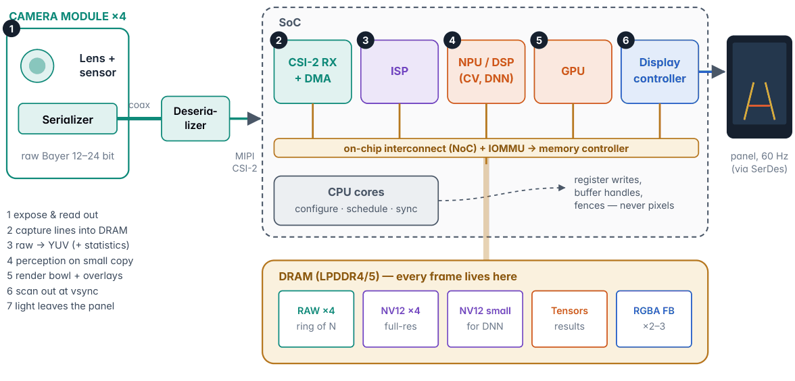
Because every engine talks to every other engine through memory, the two scarce resources of a camera SoC are DRAM bandwidth and time. Almost every rule in this guide — use DMA, avoid copies, choose the right pixel format, use display planes, pipeline asynchronously — is a way of saving one of the two.
1.2Bandwidth: the budget nobody sees until it is gone
A single uncompressed image is large, and cameras produce many of them. A useful habit is to compute the memory traffic of a pipeline the same way you would sum a power budget: every engine that writes a buffer costs bytes, and every engine that reads it costs the same bytes again. Below is a realistic four-camera surround-view system: 3-megapixel sensors (1920×1536) at 30 fps, raw 12-bit capture, NV12 output (1.5 bytes per pixel), a downscaled copy for perception, and a 1920×1080 display at 60 Hz.
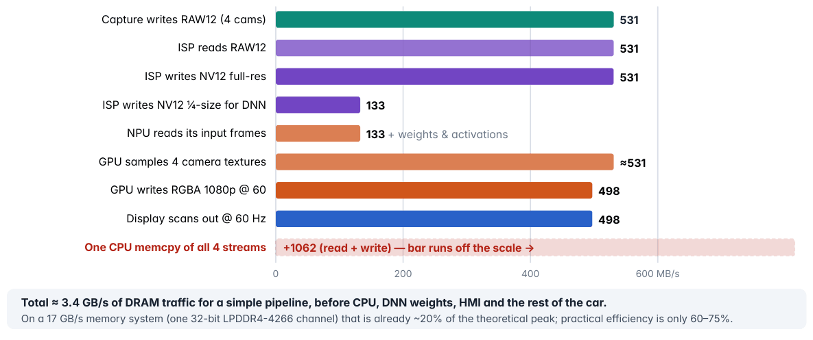
bytes/frame = width × height × bytes_per_pixel (RAW12 packed = 1.5, NV12 = 1.5, UYVY = 2, RGBA = 4). traffic = bytes/frame × fps × number_of_readers_and_writers. If the total exceeds roughly half of the SoC's theoretical DRAM bandwidth, expect frame drops and CPU slowdowns long before the GPU looks "busy".
1.3Latency: from "glass to glass"
The other budget is time. Engineers speak of glass-to-glass latency: the delay between an event happening in front of the camera lens and the same event becoming visible on the display glass. It is the number a driver feels when a pedestrian walks behind the car, and it is the sum of many small waits — most of them not caused by computation, but by waiting for the next frame boundary.
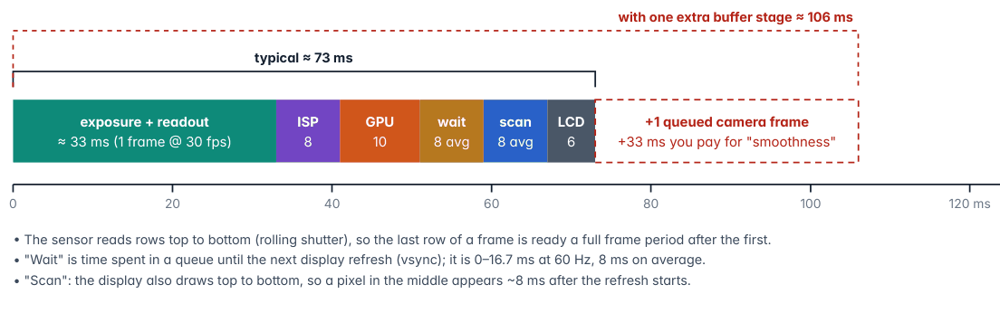
Two consequences follow. First, making the GPU twice as fast often improves latency by only a few milliseconds, while removing one queued buffer improves it by 16–33 ms. Second, latency must be measured, not calculated, because the waiting time depends on the phase relationship between the camera clock and the display clock — which drifts. Chapter 10 shows how to measure it with a blinking LED and a slow-motion phone camera.
US FMVSS 111 requires the rear-view image to appear within 2.0 seconds of selecting reverse — a boot-time requirement, not a latency one (chapter 12). Camera-monitor systems that replace mirrors (ISO 16505 / UN R46) limit latency to around 200 ms and require a minimum frame rate. OEM surround-view specifications are usually tighter, typically 100–150 ms glass-to-glass.
1.4Three lenses on the same pipeline
The same diagram means different things to different people in the room. Knowing what each role worries about makes discussions shorter.
Wants the frame in the right format, at the right resolution, with a trustworthy timestamp, without copies. Asks: what exactly is in this buffer — format, stride, colour space, tiling? when was it exposed? can my DNN read it directly?
Wants control of the raw data and the tuning: sensor modes, HDR, 3A loop timing, noise versus detail. Asks: is the output tuned for humans or machines? do I get raw dumps and statistics? how many frames does the AE loop lag?
Wants predictable KPIs: latency, boot-to-first-image, frame drops, DRAM and power budget, safety level, supplier risk. Asks: where is the bottleneck, which vendor stack locks us in, what is the ASIL of the display path?
"A camera ECU is basically a set of specialised engines connected through DRAM. The sensor's frame is written once by DMA, then the ISP, the neural accelerator, the GPU and the display all work on that same buffer by passing references and fences. Our two budgets are memory bandwidth and frame-period latency, and the architecture is built to waste neither: no CPU copies, the right pixel formats, and as few queued frames as possible."
2Camera frames: from sensor to a buffer in memory
A "frame" is not a picture but a block of bytes with a contract — resolution, pixel format, stride, memory layout, colour space and timestamp — and most camera bugs are a broken contract between whoever wrote the bytes and whoever reads them.
2.1What the sensor really produces
An image sensor measures light intensity only; it is colour-blind. To get colour, a microscopic colour filter array sits on top of the pixels, most commonly the Bayer pattern: in every 2×2 block there is one red, two green and one blue filter (green is doubled because the human eye is most sensitive to it). Each pixel therefore knows only one of three colours; the other two are estimated later by the ISP in a step called demosaicing. Automotive sensors also use variants such as RCCB (clear instead of green, for better low-light sensitivity) or RGB-IR (for in-cabin cameras), which matters because the ISP and any CV model trained on raw data must know which pattern it is.
Most automotive sensors use a rolling shutter: rows are exposed and read one after another, not all at once. The frame is therefore not a single instant — the bottom row is captured up to ~30 ms after the top row. For a parked car this is invisible; for a camera on a car turning at speed, vertical lines lean, and in a surround view the moment of capture differs along a stitching seam. Global-shutter sensors exist (used in driver-monitoring cameras) but are smaller and noisier.
The scene in front of a car has an enormous dynamic range: a dark tunnel exit and the sun in the same frame can span 120–140 dB. Automotive sensors capture this with HDR techniques — several exposures per frame (long, short, very short), split pixels with large and small photodiodes, or pixels with overflow capacitors — and merge them into a single linear value of 20–24 bits. Sending 24 bits per pixel over the link would be wasteful, so the sensor compands it: a piece-wise linear (PWL) curve compresses the value to 12–16 bits, keeping fine steps in the dark and coarse steps in the bright. The ISP must decompand with the exact same curve first; if the curve is wrong, colours shift in the highlights.
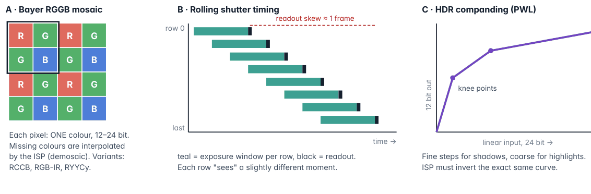
Two more sensor features matter in cars. LED flicker mitigation (LFM): traffic lights and LED headlights are pulsed hundreds of times per second; a short exposure can catch them "off", so a red light appears dark or flickers in video. Sensors fight this with long sub-exposures or split pixels. And embedded data: most sensors add a few extra lines at the top or bottom of each frame containing register values — the exposure and gains actually used, a frame counter, temperature. The ISP's auto-exposure loop and safety monitors read these lines to know exactly how a frame was taken.
2.2Getting the pixels to the computer: SerDes links
In a phone, the sensor sits a few millimetres from the processor and connects directly with MIPI CSI-2. In a car, cameras sit in mirrors, bumpers and the tailgate, up to 10–15 metres of cable away, in an electrically noisy environment. CSI-2 cannot travel that far, so a serializer/deserializer (SerDes) pair bridges the distance. The two dominant families are GMSL (Analog Devices, formerly Maxim; GMSL2 at 6 Gbps, GMSL3 at 12 Gbps) and FPD-Link (Texas Instruments; FPD-Link III and IV). The newer MIPI A-PHY standard aims to give the industry a vendor-neutral alternative.
A SerDes link is more than a long wire. One coax cable carries the high-speed video forward, power to the camera ("power over coax"), and a low-speed back channel in the opposite direction. The back channel tunnels I²C, so the SoC can program the sensor's registers as if it were on the board, and GPIO signals such as a frame-sync trigger that makes all cameras start their exposure at the same moment. A quad deserializer typically aggregates four cameras onto one CSI-2 output, tagging each camera's data with a different virtual channel.
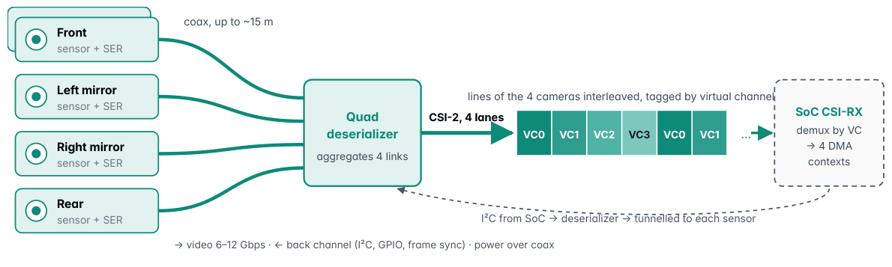
Many "camera bugs" are link bugs: a marginal cable shows up as occasional corrupted lines or CRC errors, a mis-set deserializer lane rate as no frames at all, a missing frame-sync as cameras drifting relative to each other. When bringing up a camera, read the SerDes lock and error registers before you suspect the ISP or the driver.
2.3MIPI CSI-2: a packet protocol, not a video cable
CSI-2 looks like video but behaves like networking. Data travels in packets over 1–4 differential lanes (D-PHY, each a few Gbps) or three-wire trios (C-PHY). Short packets mark events: Frame Start (FS), Frame End (FE) and optionally line start/end. Long packets carry one line of pixels each, preceded by a small header with a Data Identifier — the virtual channel plus a data type such as RAW12 (0x2C), YUV422 8-bit (0x1E) or embedded data (0x12) — a word count, and an error-correcting code, and followed by a CRC.
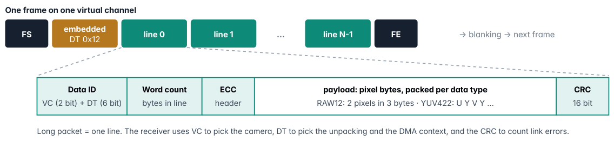
This explains several practical facts. The receiver must be told the exact data type and line length to expect, or it drops packets. "Frame Start" and "Frame End" interrupts are where drivers take timestamps. And because each line is self-describing, multiple cameras — or one camera's image plus its embedded data and statistics — can share one physical link.
2.4Linux capture: V4L2 and the buffer ring
On Linux, cameras are exposed through Video4Linux2 (V4L2). Modern camera systems are not one device but a small graph — sensor, serializer, deserializer, CSI-2 receiver, ISP, DMA — so V4L2 uses the media controller API to describe them as entities with pads connected by links. Each element has its own sub-device node (/dev/v4l-subdevN) where formats are negotiated pad by pad, and the DMA engine at the end appears as a classic video node (/dev/videoN). Tools: media-ctl -p prints the graph, v4l2-ctl sets formats and streams frames.
Frames flow through a fixed pool of buffers that circulates between the application and the driver. The application allocates N buffers (VIDIOC_REQBUFS), queues empty ones to the driver (QBUF), starts streaming, and then repeatedly dequeues filled buffers (DQBUF), uses them, and queues them back. If the application holds on to too many buffers, the driver has nothing to write into and drops frames — visible as gaps in the buffer's sequence counter.
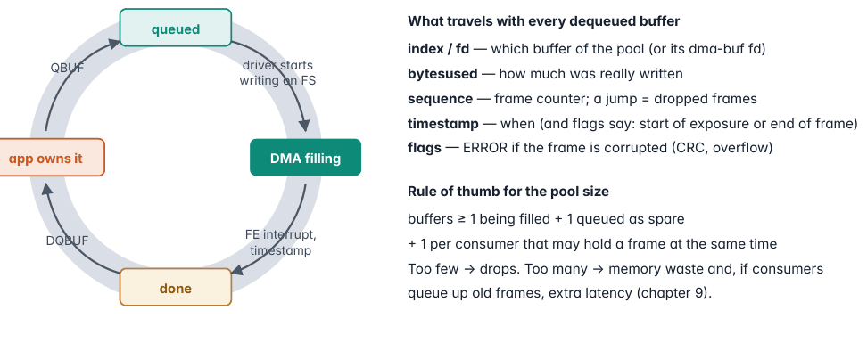
V4L2_MEMORY_DMABUF the buffers can be allocated elsewhere (by the GPU, the display or a heap) and only their file descriptors circulate — the basis of zero-copy (chapter 4).Vendor stacks often hide V4L2 behind their own APIs — NVIDIA's SIPL and Argus, TI's TIOVX capture node, Qualcomm's QCarCam on QNX — but the same concepts appear under other names: a pool of buffers, enqueue/dequeue, a frame counter and a timestamp.
2.5Pixel formats, stride and memory layout
Once a frame is in memory, its meaning depends entirely on a description that lives outside the bytes. The same 4.4 MB can be a correct image or colourful garbage depending on how it is interpreted. The description has five parts: width and height, the pixel format (identified by a four-character code, fourcc, such as NV12), the stride (also called pitch: bytes from the start of one row to the next), the plane offsets for multi-plane formats, and the layout modifier (linear, tiled or compressed).
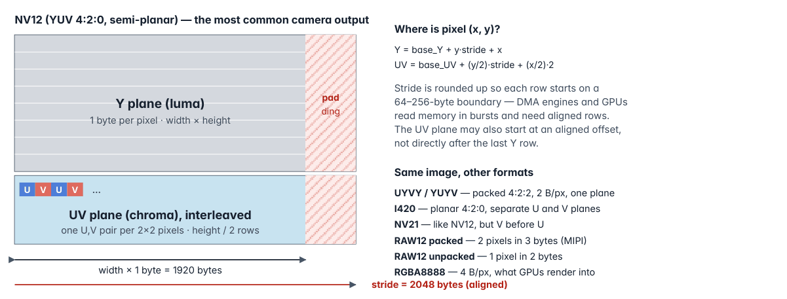
Why YUV and why 4:2:0? The eye is far more sensitive to brightness detail than to colour detail, so storing colour at half resolution in both directions saves half the memory with almost no visible loss — 1.5 bytes per pixel instead of 3. For machine vision the trade-off is similar: most networks consume luma detail and coarse colour.
Tiled and compressed layouts. GPUs and display engines read 2D neighbourhoods, not long rows, so vendors store images in tiles (e.g. NVIDIA's block-linear layout) and often compress them losslessly (e.g. Qualcomm's UBWC, Arm's AFBC) to save bandwidth. On Linux the layout is described by a 64-bit DRM format modifier that must travel with the buffer. A tiled buffer read as linear produces a scrambled mosaic; if you ever need to inspect such a buffer on the CPU, ask the vendor's 2D engine to convert it to pitch-linear first.
"NV12" does not say which YUV. Two more parameters must match between writer and reader: the matrix (BT.601 for SD-era video, BT.709 for HD, BT.2020 for HDR) and the range — limited (Y from 16 to 235) or full (0 to 255). Get the range wrong and the image looks washed-out or crushed; get the matrix wrong and skin and sky are subtly off. ISPs typically output full range for CV and limited range for video encoding.
2.6Timestamps and synchronisation
For a viewer, time is irrelevant as long as the image moves smoothly. For perception, time is everything: a detection from a camera must be fused with radar, lidar, IMU and wheel odometry, and an error of 30 ms at 50 km/h is a 40 cm position error. Three questions decide whether a timestamp is useful:
- Which moment? The driver can stamp Frame Start, Frame End, or compute the middle of exposure. For a rolling shutter, each row has its own time; the "frame time" is a convention that must be documented. V4L2 marks this in the buffer flags (start-of-exposure versus end-of-frame).
- Which clock?
CLOCK_MONOTONICof one Linux instance is meaningless to another ECU. Sensor fusion needs a shared time base, typically gPTP (IEEE 802.1AS) over automotive Ethernet, and the capture hardware should latch the timestamp in that domain. - Are the cameras synchronised? With a common frame-sync trigger, all four surround-view cameras expose at the same instant and stitching seams line up with moving objects. Without it, each camera free-runs on its own oscillator, the phase drifts, and a passing cyclist appears doubled or cut at the seam.
"A frame is a buffer plus a contract: format, stride, layout modifier, colour space and a timestamp in a defined clock. Our capture path is sensor, serializer, coax, deserializer, CSI-2, and a DMA ring of pre-allocated buffers. If the image looks wrong, we first check whether the writer and reader agree on that contract — that solves the majority of bring-up problems."
3The ISP: making an image out of measurements
The Image Signal Processor is a fixed-function hardware pipeline, steered every frame by software, that turns raw sensor measurements into a usable picture — and "usable" means something different for a driver's eyes than for a neural network.
3.1Why a dedicated ISP exists
Raw sensor data is dark, green-tinted, noisy, vignetted towards the corners, has a few dead pixels, and contains only one colour per pixel. Correcting all of that is a long sequence of per-pixel operations on hundreds of millions of pixels per second. A CPU could do it, slowly and at enormous power cost; a GPU could do parts of it; but because the steps are always the same and only their parameters change, it is built as a fixed-function hardware pipeline that processes pixels in a stream, often line by line, with very little DRAM traffic and in a few milliseconds per frame. That is the ISP: hard-wired algorithms, soft-wired parameters.
3.2The pipeline, stage by stage
Every vendor's ISP has a different block diagram, but the order of operations is dictated by physics, so they look surprisingly alike. Processing starts in the Bayer domain (one colour per pixel, values still proportional to light), moves to the RGB domain after demosaicing, and ends in the YUV domain where the output is formatted for consumers.
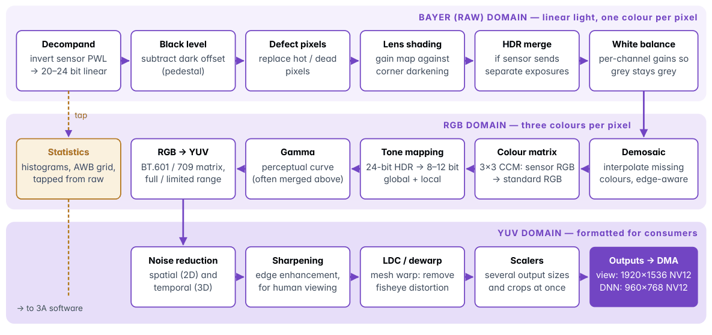
A few stages deserve a sentence more, because they come up in every image-quality discussion:
- Lens shading correction compensates the natural darkening and colour shift towards the image corners. Its gain map is calibrated per lens type; with fisheye lenses it can exceed 4× in the corners, which also amplifies noise there.
- White balance and the colour matrix make colours independent of the illuminant (sun, sodium street light, LED). The CCM is calibrated with a colour chart; different matrices for different colour temperatures are blended at run time.
- Tone mapping is where HDR becomes viewable: a 24-bit scene has to fit into an 8-bit display without losing either the tunnel or the sky. Local tone mapping adapts per region and produces the most pleasant image — and also the most non-linear one, which matters for CV (section 3.4).
- Temporal noise reduction blends the current frame with the previous one. It removes noise beautifully in static scenes and smears moving objects ("ghosting") if tuned too strongly — a classic conflict between image quality and perception.
- Lens distortion correction (LDC) remaps the image through a mesh or look-up table: for each output pixel, where in the input should it come from? This is exactly the same operation the GPU performs in surround view (chapter 5); some systems split the work between them.
3.33A: the control loop around the pipeline
The ISP hardware is fast but not smart. The intelligence is in the 3A algorithms — auto exposure (AE), auto white balance (AWB) and, in phones, autofocus (AF; automotive cameras are fixed-focus). They run in software on a CPU core, DSP or microcontroller, read the statistics the ISP produced for the last frame, decide new parameters, and write them back: exposure time and analogue gain go to the sensor over I²C, white-balance gains and colour matrix go to ISP registers.
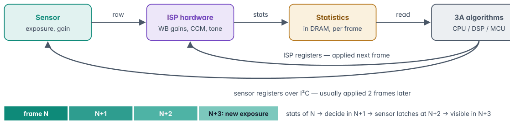
The embedded-data lines from chapter 2 close the loop reliably: they tell the 3A software which exposure was actually applied to the frame it is analysing, instead of assuming its last request took effect. Getting this bookkeeping wrong causes AE oscillation — the image pumps brighter and darker — which is one of the most common 3A bugs.
3.4Tuned for humans or for machines?
A viewing ISP is tuned to please the eye: punchy colours, strong local tone mapping, aggressive noise reduction and sharpening. A perception ISP should instead be predictable: a network trained on one camera's images should see the same statistics on another car, in another light, after the next tuning update. Many processing steps that make images prettier destroy information a network relies on, or make it scene-dependent.
| STAGE | TUNED FOR HUMAN VIEWING | TUNED FOR MACHINE PERCEPTION |
|---|---|---|
| Tone mapping | Strong local operators, "HDR look" | Global, fixed or slowly varying curve; sometimes linear 12–16-bit output |
| Noise reduction | Strong spatial + temporal NR for clean video | Mild; avoid temporal NR that smears moving pedestrians |
| Sharpening | Edge enhancement for crisp look | Off or minimal — creates halos and false edges |
| Colour | Saturated, "memory colours" | Colorimetrically consistent; stable across illuminants |
| Exposure | Faces and mid-tones look good | Protect highlights (traffic lights, headlamps), stable |
| Changes over time | Fine to re-tune for taste | Every change can require re-validation of the network (SOTIF) |
The usual resolution is an ISP with several outputs from one input: a viewing output and a perception output that branch after the shared early stages, with different tone curves and scalers. Some programs go further and feed networks with nearly raw data. Whatever the choice, the ISP configuration becomes part of the perception system's operational design domain: changing it is a safety-relevant change.
3.5Where the ISP lives
The camera sends raw data; the central computer's ISP processes all cameras. NVIDIA, TI (VPAC/VISS) and Qualcomm (Spectra) all integrate one. Pros: cheaper cameras, raw data available to CV and recording, central tuning, multiple outputs. Cons: more SoC bandwidth and power, the ISP must support each sensor, tuning effort sits with the ECU team.
A small ISP chip or ISP-in-sensor sends finished YUV over the link. Common for simple rear-view and in-cabin cameras. Pros: plug-and-play camera, ECU needs no tuning, easy to source. Cons: fixed human-oriented tuning, no raw for CV, higher camera cost and heat, harder to synchronise image quality across the four surround-view cameras.
3.6Calibration and tuning, briefly
An ISP is only as good as its parameters. Bringing up a new sensor-lens combination follows a recognisable path: characterise the sensor in a lab (black level, noise profile at each gain, linearity, defect map), calibrate lens-dependent tables (lens shading at several colour temperatures, colour matrices with a chart, distortion model for LDC), then tune the subjective and task-specific parts (noise reduction strength, tone mapping, sharpening) against objective metrics — SNR, MTF/sharpness, colour error ΔE, dynamic range, flicker — and finally in real drives. Geometric calibration (intrinsics and extrinsics, end-of-line or targetless) is a separate track but shares the same distortion model with LDC and with the GPU's surround-view mesh.
"The ISP is a fixed-function pipeline steered every frame by 3A software. It turns 24-bit HDR raw measurements into YUV in a few milliseconds without the CPU touching pixels. We run it with two personalities: a viewing output tuned for the driver and a perception output tuned for stability, because pretty and predictable are different goals — and the perception tuning is treated as part of the safety case."
4Memory, DMA and zero-copy
DMA lets hardware engines move data without the CPU, the IOMMU lets them use ordinary scattered memory safely, and dma-buf lets them share one buffer by passing a file descriptor — together these make "zero-copy" possible, and caches and layouts are what make it tricky.
4.1Why DMA: the CPU is the wrong tool for moving pixels
Direct Memory Access means that a device reads or writes system memory by itself, while the CPU does something else. The CPU sets up a descriptor — source, destination, length, maybe a 2D shape with stride — and the device raises an interrupt when it is done. Every engine in a camera SoC is in fact a DMA master: the CSI-2 receiver writes lines into DRAM, the ISP reads and writes, the GPU fetches textures, the display controller reads the framebuffer sixty times a second. There are also general-purpose DMA engines for plain copies and 2D blits.
The alternative — the CPU doing memcpy — costs a core for hundreds of microseconds per frame, pollutes the caches with data the CPU never needs again, and on many SoCs is actually slower than a DMA engine because CPU memory paths are optimised for latency, not streaming. On a safety-relevant ECU, it also makes frame timing depend on CPU scheduling. The goal is therefore not "faster copies" but no copies: produce data once where every consumer can read it.
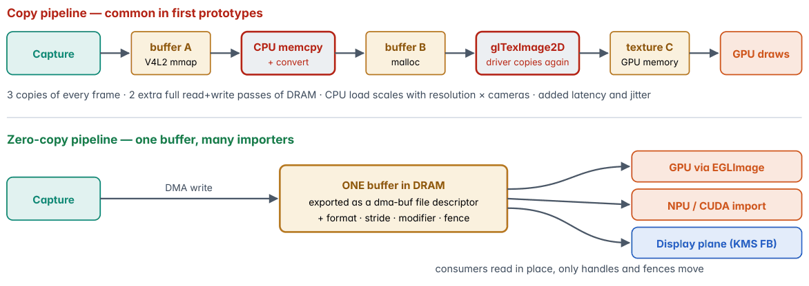
4.2Physical memory, contiguity and the IOMMU
Programs see virtual memory: the operating system maps pages of 4 KB scattered anywhere in DRAM so that they look contiguous. A simple DMA engine, however, only understands physical addresses and walks through memory linearly. A 4.4 MB frame would therefore need 4.4 MB of physically contiguous memory — hard to find after the system has been running for a while, because memory gets fragmented.
Two solutions exist. The old one is to reserve memory: a carve-out set aside at boot in the device tree, or Linux's CMA (Contiguous Memory Allocator), which reserves a region that normal programs may borrow but must give back when a driver needs a large contiguous block. The modern one is the IOMMU (Arm calls it SMMU): an address translation unit in front of the devices, just like the CPU's MMU. The driver maps scattered physical pages into one contiguous device virtual address range, and the engine never notices the fragmentation.
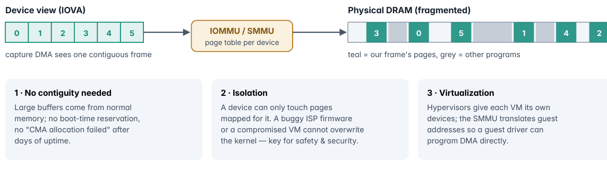
If an engine accesses an address that is not mapped — a buffer freed too early, a wrong stride that runs past the end — the IOMMU blocks the access and logs a context fault (arm-smmu ... Unhandled context fault in dmesg). The engine often stalls, and the symptom upstream is "the camera stopped" or "the GPU hung". Always check the kernel log for SMMU faults first.
4.3Caches: the reason zero-copy is not free
CPUs keep recently used memory in caches. Most camera and display engines do not look into CPU caches — they talk to DRAM directly. This creates two classic bugs when the CPU and a device share a buffer:
The camera wrote a new frame into DRAM, but the CPU still has old lines of the same buffer in its cache and reads those. Symptom: parts of the image (in cache-line-sized blocks) show the previous frame. Fix: invalidate the CPU cache for that buffer before the CPU reads it.
The CPU drew an overlay into a buffer, but the bytes are still in the CPU cache, not yet in DRAM, when the display reads them. Symptom: overlay partly missing or flickering. Fix: clean (flush) the CPU cache before handing the buffer to the device.
On Linux, user space does this with DMA_BUF_IOCTL_SYNC (begin / end CPU access) around any CPU touch of a shared buffer; the kernel's DMA API does it for drivers. Some SoCs offer hardware coherency for certain engines (the GPU on NVIDIA Tegra and on many Qualcomm parts can snoop CPU caches), which removes the bugs but costs bandwidth and power. The alternative is mapping buffers uncached or write-combined for the CPU: always correct, but reading such memory pixel by pixel from the CPU is 10–50× slower than cached memory — a frequent explanation for "my OpenCV code on the camera buffer is unbelievably slow".
Avoid it on the hot path. When you must (debug dumps, small regions of interest, legacy algorithms), map the buffer cached, wrap access in begin/end sync, read it sequentially in large chunks, and copy the region you need into ordinary memory once rather than accessing the shared buffer randomly.
4.4dma-buf: the currency of zero-copy on Linux
Each Linux driver used to have its own way of allocating memory — V4L2 buffers, DRM GEM objects, vendor ION allocations — and none could see the others'. dma-buf is the kernel framework that unified them: any driver can export a buffer as a file descriptor, and any other driver can import that fd, map it into its own IOMMU, and use it. Because it is an ordinary fd, it can be passed between processes over a Unix socket — that is how a camera service hands frames to a Wayland compositor or to a separate perception process without copying.
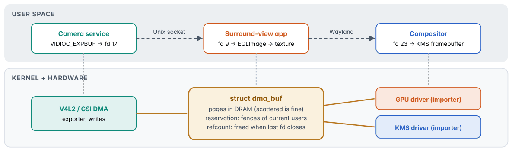
Where do shared buffers come from? On modern Linux, a neutral allocator is the dma-heap interface (/dev/dma_heap/system, /dev/dma_heap/cma or vendor heaps), which replaced Android's ION. Graphics stacks also allocate through GBM (Generic Buffer Management, part of Mesa and vendor drivers) or Android's gralloc / AHardwareBuffer. The crucial question is not who allocates but whether the allocation satisfies every consumer's constraints at once: alignment, stride, contiguity, tiling, compression, cache policy, which memory region. A buffer that is perfect for the GPU may be unreadable for the display. Vendors solve this negotiation explicitly — NVIDIA with NvSciBuf attribute reconciliation, Wayland with format/modifier negotiation — and chapter 11 compares them.
| CONCEPT | GENERIC LINUX | NVIDIA | TI JACINTO | QUALCOMM |
|---|---|---|---|---|
| Shared buffer object | dma-buf fd | NvSciBuf object, NvBufSurface (Jetson) | dma-buf; TIOVX shared-memory carve-outs | dma-buf (Linux/Android), PMEM (QNX) |
| Allocator | dma-heap, GBM, V4L2 MMAP | NvSciBuf, NvRmMem | dma-heap / CMA, TIOVX app memory | dma-heap (was ION), gralloc |
| Layout description | fourcc + DRM modifier | pitch-linear / block-linear attribute | mostly pitch-linear | UBWC flags / modifier |
| Cross-engine sync | dma-fence, sync_file | NvSciSync | TIOVX graph scheduling, IPC | sync_file fences |
4.5Saving bandwidth beyond zero-copy
Removing copies is the first step. The next ones reduce what each engine must read and write: lossless framebuffer compression (UBWC, AFBC, NVIDIA's compression) cuts traffic by 30–50% for natural images and is transparent as long as every engine in the chain understands it; tiling improves cache hit rates for 2D access; scaling early — have the ISP produce the 960-pixel DNN input directly instead of letting the network pre-processing downscale a full-resolution frame; display planes let the display controller compose camera video and overlays on the fly instead of the GPU writing another full frame (chapter 7); and right-sizing bit depth, e.g. 8-bit NV12 for viewing but 12-bit only where perception needs it.
"Every engine in the SoC is a DMA master, so pixels never need to pass through the CPU. The IOMMU lets those engines use ordinary memory safely and isolates them from each other, and on Linux dma-buf is the common currency: one buffer, exported as a file descriptor, imported by the GPU, the NPU and the display. The engineering work is in agreeing a format every consumer can read and in handling caches correctly when the CPU does need to look."
5How a GPU renders
A GPU is a machine for answering one question millions of times in parallel — "what colour is this output pixel?" — usually by looking up and filtering pixels from input images, which is exactly what surround view, dewarping, overlays and HMI need.
5.1Why a GPU in a camera system
The ISP and the display controller are fixed-function: fast, efficient, but only able to do what they were designed for. The GPU is the programmable pixel engine. It is what you use when the output pixel's colour depends on a geometric relation you define yourself: projecting four fisheye images onto a 3D bowl, rendering a virtual camera that orbits the car, drawing parking guidelines that bend with the steering angle, blending transparent icons, rendering the instrument cluster's needles and text. It is also a general parallel processor for pre-processing (colour conversion, resizing and normalising DNN inputs) through compute APIs such as CUDA, OpenCL or compute shaders.
The GPU's strength is massive parallelism: thousands of small arithmetic units that execute the same program for many pixels at once, plus dedicated texture units that fetch and bilinearly filter image data in hardware. Its weakness is that it is a separate processor fed through a command queue — every interaction costs driver overhead and synchronisation, which chapter 9 is about.
5.2The graphics pipeline in one picture
Every modern GPU API — OpenGL ES, Vulkan, Direct3D, Metal — exposes the same basic pipeline. You describe geometry as triangles whose corners (vertices) carry attributes such as position and texture coordinates. The GPU transforms them, figures out which pixels each triangle covers, and runs a small program for every covered pixel to compute its colour.
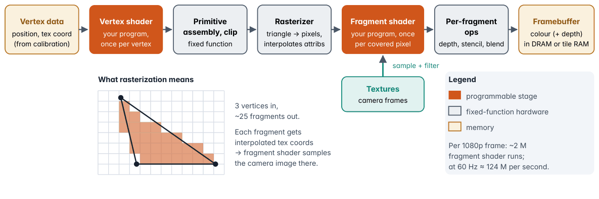
Two kinds of programs — shaders — run on the GPU's cores. The vertex shader transforms each vertex from the 3D model into screen coordinates, using a matrix that encodes the virtual camera position. The fragment shader (pixel shader) computes the colour of each covered pixel, typically by sampling one or more textures and doing some arithmetic. Shaders are written in GLSL (OpenGL ES), SPIR-V-compiled GLSL/HLSL (Vulkan) or similar, and compiled by the driver into the GPU's native instructions.
Textures and sampling
A texture is an image the GPU can read with a sampler. Coordinates are normalised (0 to 1), and the sampler returns not just the nearest pixel but, with bilinear filtering, a weighted average of the four nearest — done in dedicated hardware at essentially no shader cost. Two details matter for camera work. When a large camera image is drawn small (the top-down view uses only a fraction of each 3 MP camera), plain bilinear sampling aliases — fine textures such as gravel or kerb stones shimmer. Mipmaps (pre-filtered half, quarter, eighth-size copies) fix it but must be regenerated for every new camera frame, which costs bandwidth; often a downscaled ISP output is the cheaper answer. And YUV camera frames can be sampled directly as external textures where the sampler converts YUV to RGB in hardware (chapter 6).
5.3Surround view: the canonical automotive GPU workload
Surround view (also called 360° view or bird's-eye view) is the best way to understand GPU rendering in this domain, because it uses every concept above. The idea: build a virtual 3D surface around the car — a flat floor that curves up into walls, the "bowl" — and paint each point of the bowl with the camera pixel that saw it. Then render that bowl from any virtual viewpoint.
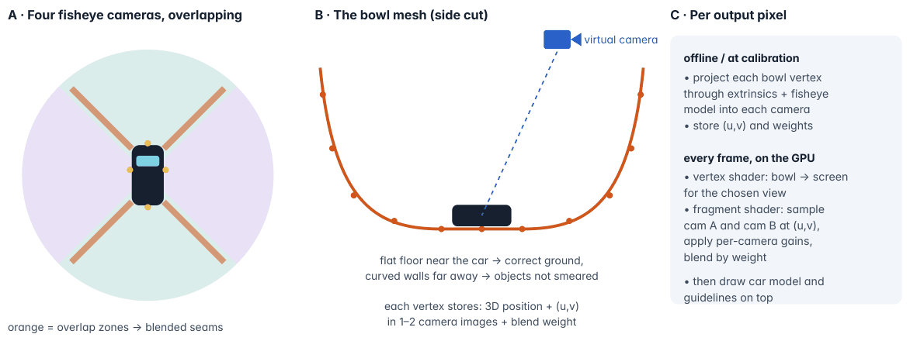
// GLSL ES fragment shader — the core of a surround-view blend (simplified)
#extension GL_OES_EGL_image_external_essl3 : require
precision mediump float;
uniform samplerExternalOES camA, camB; // YUV camera frames, sampled as RGB
uniform vec3 gainA, gainB; // photometric alignment per camera
in vec2 uvA, uvB; // interpolated from the bowl mesh
in float w; // blend weight: 1 = only A, 0 = only B
out vec4 color;
void main() {
vec3 a = texture(camA, uvA).rgb * gainA;
vec3 b = texture(camB, uvB).rgb * gainB;
color = vec4(mix(b, a, w), 1.0);
}The interesting engineering is in the details. The bowl's shape decides where objects get distorted: a dense mesh near the car and near seams gives accuracy, a coarse one saves vertex work. Seams can be fixed, or dynamic — shifted away from detected obstacles so a pedestrian is not cut in half. The car body itself is rendered as a 3D model on top, with transparency to show what is underneath (the "transparent hood" feature uses previous frames stitched with odometry). And everything that depends on calibration — extrinsics after an end-of-line or online recalibration — means regenerating the mesh, not changing shaders.
5.4Immediate-mode versus tile-based GPUs
This is the single most important architectural difference between GPUs you will meet. Immediate-mode renderers (IMR) — desktop-heritage designs such as NVIDIA's — process each triangle as it arrives and write the resulting pixels to the framebuffer in DRAM, relying on large caches to absorb the traffic. Tile- based renderers (TBR / TBDR) — Imagination PowerVR (in TI Jacinto and Renesas R-Car), Arm Mali, and Qualcomm Adreno in its "binning" mode — first sort all triangles of a frame into small screen tiles (e.g. 16×16 or 32×32 pixels), then render each tile completely in fast on-chip memory and write it to DRAM exactly once.
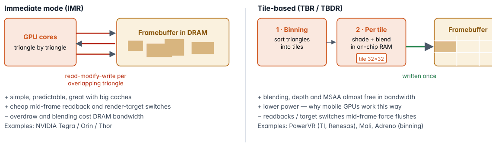
- Start each frame with
glClear(so the GPU need not load the old contents into the tile) and end it withglInvalidateFramebufferfor depth/stencil you do not need (so it need not store them). - Do not read back the framebuffer (
glReadPixels) or switch render targets back and forth in the middle of a frame; each switch can force all tiles to be written out and re-loaded. - Prefer one pass with a smarter shader over several full-screen passes; on TBR, the bandwidth of each extra pass is the expensive part.
5.5A mental model for GPU performance
| BOTTLENECK | TYPICAL CAUSE IN CAMERA APPS | WHAT HELPS |
|---|---|---|
| Fragment / ALU | Complex per-pixel shaders, high output resolution, many full-screen passes | Lower precision (mediump), move maths to vertices or precompute into the mesh, fewer passes |
| Texture / memory | Sampling four 3 MP YUV frames for a small output, no mipmaps, tiled vs linear mismatch | Smaller ISP output for the view, GPU-native layouts, compression |
| Vertex | Rarely; very dense meshes or many 3D car models | Level of detail, simpler meshes |
| CPU / driver | Thousands of small draw calls (HMI widgets), state changes, shader recompiles | Batching, instancing, Vulkan, pre-compiled program binaries |
| Synchronisation | glFinish, glReadPixels, waiting on camera fences on the CPU | Fences, asynchronous readback, pipelining (chapter 9) |
The quick diagnostic is to vary one thing at a time: halve the output resolution (if the frame time halves, you are fragment-bound), replace camera textures with a tiny constant texture (memory-bound?), or measure CPU time per frame separately from GPU time with timer queries.
5.6GPU compute and how it relates to CV
The same cores can run non-graphics programs. CUDA (NVIDIA only) is the most mature; OpenCL is available on Adreno and some PowerVR parts; compute shaders exist in OpenGL ES 3.1+ and Vulkan everywhere. In automotive vision these mostly do pre- and post-processing — colour conversion, resizing, normalisation into a tensor, non-maximum suppression, occupancy-grid updates — while the neural network itself usually runs on a dedicated accelerator (NVIDIA DLA, TI C7x/MMA, Qualcomm Hexagon NPU) that is several times more power-efficient. A common design pattern is that the GPU is shared between rendering (deadline: every vsync) and compute (deadline: perception cycle); without GPU priorities or partitioning, a heavy compute job can make the surround view stutter.
"The GPU answers 'what colour is this pixel' massively in parallel. For surround view we precompute the fisheye projection into a bowl mesh at calibration time; every frame the GPU just interpolates coordinates, samples four camera textures and blends the seams — milliseconds of work. Architecture matters: mobile-style tile-based GPUs keep the framebuffer on chip and punish mid-frame readbacks, desktop-style GPUs are more forgiving but more bandwidth-hungry."
6OpenGL ES, EGL and Vulkan
OpenGL ES tells the GPU what to draw, EGL connects that drawing to the real world — windows, displays and buffers from other drivers — and Vulkan is the newer, explicit alternative; for camera systems, the most important feature of all three is the ability to import a camera buffer without copying it.
6.1The family tree
OpenGL appeared in 1992 for workstations and grew large, with decades of backward compatibility. OpenGL ES ("Embedded Systems") is a trimmed-down subset defined by the Khronos Group for phones, cars and devices: ES 2.0 made the pipeline fully programmable with shaders, ES 3.x added modern features (multiple render targets, instancing, compute shaders in 3.1, geometry and tessellation in 3.2). Practically every automotive GPU supports OpenGL ES 3.2 today. Vulkan (2016) is a clean redesign that gives the application explicit control and much lower driver overhead; Vulkan SC (2022) is its safety-critical profile, the successor to the older OpenGL SC.
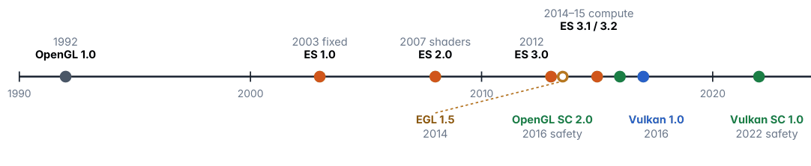
OpenGL ES is a state machine: you bind objects (a shader program, textures, a vertex buffer, a framebuffer) to "current" slots, set state (blending on, viewport size), and issue a draw call that uses whatever is currently bound. It is easy to start with and hides a lot — memory management, synchronisation, command submission — inside the driver. That convenience is also its weakness: the driver must guess, validate state on every draw, and may compile shaders or allocate memory at unexpected moments, which shows up as occasional long frames.
GLSL shaders are compiled by the driver at run time, which can take tens to hundreds of milliseconds per program on an embedded GPU — painful when the rear-view image must appear within seconds of boot. Production systems cache compiled programs (glGetProgramBinary / glProgramBinary, or the driver's on-disk shader cache) and load them at start-up. Remember to invalidate the cache when the GPU driver is updated.
6.2EGL: the glue nobody sees until it breaks
OpenGL ES deliberately says nothing about windows, screens or where memory comes from. That job belongs to EGL, the interface between the rendering API and the native platform — a Wayland compositor, a bare DRM/KMS display, NVIDIA's EGLDevice, a null window system, QNX Screen or Android. Every GLES application starts by building four EGL objects:
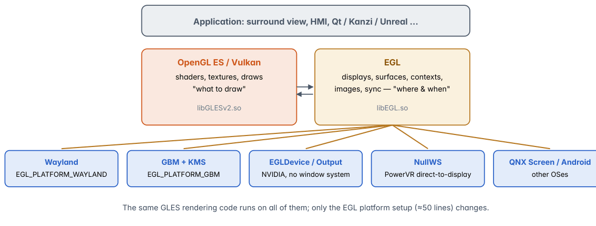
- EGLDisplay — a connection to the native platform (a Wayland connection, a GBM device, an EGLDevice). Obtained with
eglGetPlatformDisplayand initialised witheglInitialize. - EGLConfig — the pixel format you want for rendering: bits per colour channel, alpha, depth buffer, MSAA. Chosen with
eglChooseConfig. - EGLSurface — where rendering goes: a window surface backed by a chain of buffers the platform will display, or an off-screen pbuffer. Many camera apps render into their own framebuffer objects instead.
- EGLContext — the GLES state: bound objects, shaders, settings. It is current on exactly one thread at a time (
eglMakeCurrent), a frequent source of multi-threading bugs.
rendering: bits per colour channel, alpha, depth buffer, MSAA. Chosen with eglChooseConfig.
EGLContext — the GLES state: bound objects, shaders, settings. It is current on exactly one thread at a time (eglMakeCurrent), a frequent source of multi-threading bugs.
The loop then is: draw with GLES, call eglSwapBuffers. Swap does not copy pixels; it hands the just-finished back buffer to the platform (the compositor or the display) together with a fence, and gives the application the next free buffer to draw into. eglSwapInterval(display, 1) requests that presentation waits for vsync; 0 allows tearing or dropping frames. Whether swap blocks depends on how many buffers are queued — the hidden reason why some applications measure "60 fps" but feel laggy (chapter 9).
6.3EGLImage: getting a camera frame into the GPU without copying
The single most important EGL feature for camera work is EGLImage: a handle to a 2D image that may come from somewhere else — another API, another driver, another process. With the extension EGL_EXT_image_dma_buf_import, you describe an existing dma-buf (the capture buffer from chapter 4) to EGL: its fd, size, fourcc, the offset and pitch of each plane, and optionally the format modifier and colour space hints. EGL returns an image that the GPU can sample directly. The camera keeps writing into the same pool of buffers; you create one EGLImage per buffer once at start-up and reuse them.
// Import a V4L2 NV12 capture buffer (dma-buf fd) as a GLES external texture.
EGLint attrs[] = {
EGL_WIDTH, 1920, EGL_HEIGHT, 1536,
EGL_LINUX_DRM_FOURCC_EXT, DRM_FORMAT_NV12,
EGL_DMA_BUF_PLANE0_FD_EXT, fd, // Y plane
EGL_DMA_BUF_PLANE0_OFFSET_EXT, 0,
EGL_DMA_BUF_PLANE0_PITCH_EXT, 2048, // stride, not width!
EGL_DMA_BUF_PLANE1_FD_EXT, fd, // UV plane, same buffer
EGL_DMA_BUF_PLANE1_OFFSET_EXT, 2048 * 1536,
EGL_DMA_BUF_PLANE1_PITCH_EXT, 2048,
EGL_YUV_COLOR_SPACE_HINT_EXT, EGL_ITU_REC709_EXT, // matrix
EGL_SAMPLE_RANGE_HINT_EXT, EGL_YUV_FULL_RANGE_EXT, // range
EGL_NONE };
EGLImageKHR img = eglCreateImageKHR(dpy, EGL_NO_CONTEXT, EGL_LINUX_DMA_BUF_EXT, NULL, attrs);
glBindTexture(GL_TEXTURE_EXTERNAL_OES, tex);
glEGLImageTargetTexture2DOES(GL_TEXTURE_EXTERNAL_OES, img); // no pixel copy happens here
// In the shader: uniform samplerExternalOES cam; texture(cam, uv) returns RGB.Notice how much of the "frame contract" from chapter 2 appears as attributes: fourcc, pitch, plane offsets, matrix, range. If any of them is wrong, the import still succeeds and the result looks wrong in a characteristic way (chapter 10). Also note GL_TEXTURE_EXTERNAL_OES: an external texture is opaque to the application — you cannot render into it or query its exact format — but the sampler converts YUV to RGB in hardware during sampling, so the shader sees ordinary RGB. If you need the planes separately (e.g. for a custom conversion or to feed Y into a CV kernel), import the Y and UV planes as two ordinary single-channel EGLImages (R8 and GR88) instead.
An EGLImage points to memory that the camera may overwrite at any moment. The GPU must not sample a buffer the capture DMA is currently filling, and the capture driver must not reuse a buffer the GPU has not finished reading. With implicit synchronisation the drivers handle part of this; with explicit sync you pass fences (chapter 9). The robust pattern: dequeue a frame, render with it, insert a fence, and re-queue the buffer to the camera only after the fence has signalled.
The same idea appears under other names on vendor platforms: NVIDIA offers EGLStreams and NvSciBuf-backed images, CUDA can map EGLImages (cuGraphicsEGLRegisterImage), OpenCL has cl_khr_egl_image, and Android uses AHardwareBuffer → EGLImage. The principle never changes: describe the existing buffer, don't upload pixels.
6.4OpenGL ES versus Vulkan
| ASPECT | OPENGL ES | VULKAN |
|---|---|---|
| Programming model | Implicit global state machine; driver manages memory and sync | Explicit: application records command buffers, allocates memory, manages sync |
| CPU overhead | Higher; validation on every draw; one context per thread | Low; multi-threaded command recording; validation only in debug layers |
| Predictability | Driver may compile, allocate or flush at surprising moments | Pipelines pre-built, memory pre-allocated — more deterministic |
| Camera import | EGLImage + external textures (simple) | External memory + VK_EXT_image_drm_format_modifier, YCbCr samplers (more code) |
| Learning curve | Hundreds of lines to a triangle | About a thousand lines to a triangle |
| Safety-critical profile | OpenGL SC 2.0 (ES 2.0-based, ageing) | Vulkan SC 1.0 (offline pipeline compilation, static memory) |
| Typical use in cars | Camera views, legacy HMI, most vendor samples | New HMI/3D engines, cluster with safety needs, Android Automotive |
"We render with OpenGL ES 3.2; EGL is the layer that connects it to the display and to other drivers. The camera frames enter the GPU through EGLImage: we describe the existing dma-buf — format, stride, colour space — and the GPU samples it directly as an external texture, with YUV-to-RGB done in the texture unit. Vulkan is the path for new HMI work where we want lower CPU overhead and more deterministic behaviour, and Vulkan SC where the rendering is safety-relevant."
A Vulkan introduction for OpenGL ES programmers, with a frame compared call by call, is in GPU programming for surround view 35.
7The display path
A display controller is a DMA engine with a strict clock: sixty times per second it reads one or more buffers from memory, blends them on the fly and streams the pixels to the panel — and everything about smoothness, tearing and display latency follows from that rhythm.
7.1Scanout: the display never stops
A panel has no memory of its own in most automotive designs; it must be refreshed continuously. The display controller (called DC, DSS, DPU or MDP depending on the vendor) generates the pixel stream: starting at the top-left, it reads the framebuffer from DRAM line by line, at a precise pixel clock, and pushes the pixels through an interface — MIPI DSI, eDP, LVDS or parallel RGB on the board, or through a display serializer (FPD-Link, GMSL, APIX) over a cable to the cluster, central or passenger screens. Between lines and between frames there are short blanking intervals, a legacy of CRT beam retrace that today gives the panel and the controller time to synchronise.
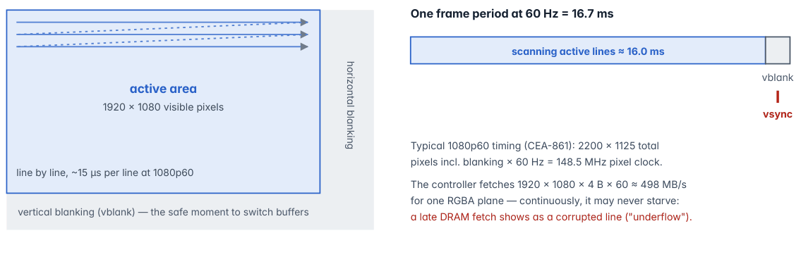
7.2Double buffering, page flips and tearing
If the GPU drew directly into the buffer being scanned out, the panel would show a mix of the old and new frame — a horizontal tear where the scan line crossed the drawing position. The universal fix is double buffering: the display scans buffer A (the front buffer) while the GPU draws into buffer B (the back buffer). When B is finished, the application requests a page flip; the controller switches its read pointer from A to B during the next vertical blanking, so a frame is always shown completely. Then A becomes the new back buffer.
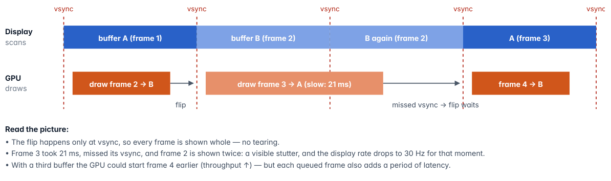
7.3Hardware planes: composition without the GPU
Modern display controllers do not read just one buffer. They have several planes (also called layers, pipes or overlays), each reading its own buffer, possibly in a different pixel format, with its own position, size, scaling, rotation and alpha. A blender combines them line by line during scanout. This is enormously useful in camera systems, because the camera frame can go to the screen without the GPU:
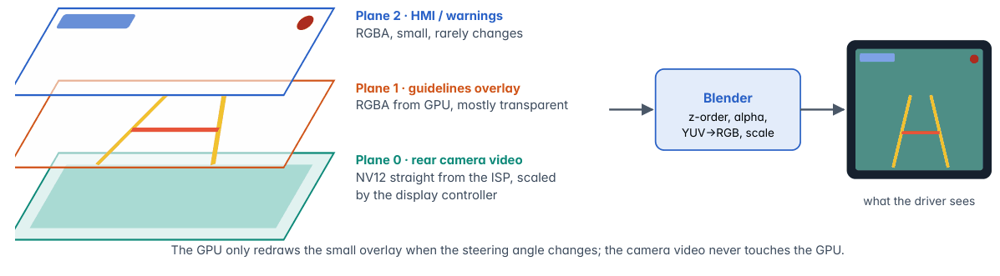
Planes are a limited resource with strict constraints: only some support YUV, scaling or rotation; there are maximum sizes and bandwidth limits; and some overlaps are not allowed. The compositor or application must check whether a given configuration is possible — on Linux with an atomic test-only commit — and fall back to GPU composition if not. Surround view itself needs the GPU (it is a 3D warp), but a simple rear-view camera, a side-mirror replacement or a video in the infotainment display often should not.
7.4Linux DRM/KMS: the display as a graph of objects
On Linux, display hardware is driven through DRM (Direct Rendering Manager) and its mode-setting part, KMS (Kernel Mode Setting). KMS models every display controller with the same set of objects, which makes it possible to write portable display code and to inspect any system with the same tools.
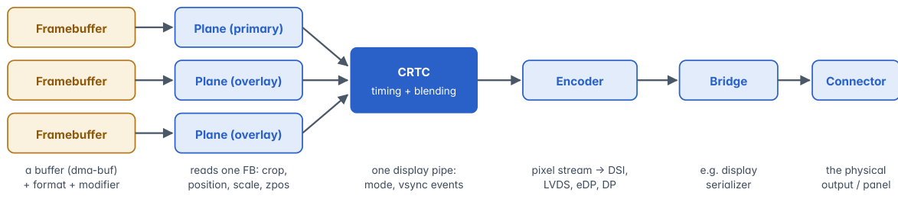
modetest (libdrm) lists all of them and their properties on any Linux system.All changes go through atomic modesetting: the application builds one request that sets many properties at once — "plane 1 shows framebuffer 42 at (0,0) scaled to 1920×720, plane 2 shows framebuffer 17 on top" — and commits it. The kernel either applies all of it at the next vblank or none of it. A test-only flag asks "would this work?" without applying it, which is how compositors decide whether to use a plane. Commits can carry an in-fence (do not flip before the GPU finished this buffer) and return an out-fence (signalled when the old buffer is no longer scanned and may be reused) — the explicit synchronisation discussed in chapter 9. Only one process, the DRM master, may change the display configuration at a time; normally the compositor.
7.5Displays in a car
A modern cockpit has several displays — instrument cluster, central infotainment display, head-up display, passenger screen, sometimes mirror-replacement monitors — often driven by one SoC, with different OSes or virtual machines owning them. Three automotive specifics come up repeatedly:
- Remote panels. Displays sit up to a few metres from the ECU and are connected through display serializers; the panel side has its own timing controller, local dimming and sometimes its own frame buffer. Link errors, panel power sequencing and backlight control become part of display bring-up.
- Ownership and sharing. One display controller may be split between a safety domain (cluster tell-tales, rear camera, owned by an RTOS core or a safety VM) and the rich OS (Linux, Android). Vendors provide mechanisms to give planes or whole pipes to different owners.
- Integrity checking. For safety-relevant content, display controllers can compute a CRC of selected screen regions after blending, and a monitor compares it against the expected value — this detects frozen, missing or corrupted tell-tales and camera images (chapter 12).
"The display controller reads its buffers sixty times a second with hard deadlines, so it gets top bus priority. We avoid tearing with double buffering and atomic page flips at vblank. Where possible we let hardware planes compose: the camera video goes straight from the ISP to a YUV plane and the GPU only renders the guideline overlay. That saves bandwidth, cuts latency, and keeps the rear view alive even if the GPU has a problem."
8Linux, Wayland and NullWS
A window system decides which application's pixels appear where on a shared screen; Wayland does this with a compositor that ideally just hands client buffers to display planes, while "NullWS"-style setups skip the window system entirely and let one application own the display — faster and simpler, but alone.
8.1The Linux graphics stack in layers
When a surround-view application draws a frame on embedded Linux, its request passes through several layers, each with a clear responsibility. Knowing which layer owns what is most of the battle in debugging.
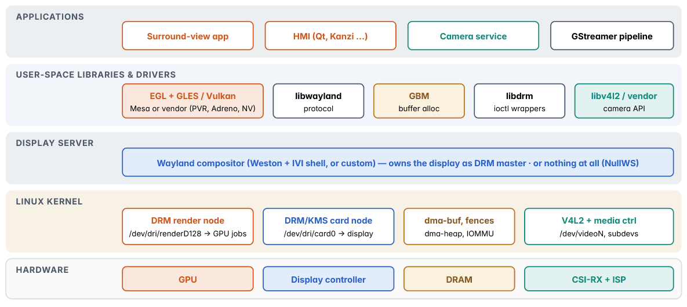
Two kernel interfaces are easily confused. The render node lets any application submit GPU work and allocate GPU buffers, without permission to touch the display. The KMS card node controls the display, and only one process at a time may be the master. This split is the whole reason a window system exists on Linux: if several applications want to show something on one screen, exactly one of them — the compositor — must own KMS and arrange the others.
8.2Why X11 is not used in cars any more
The classic X Window System (X11) put a server between applications and the screen. It was designed in the 1980s for network-transparent drawing: applications sent drawing commands, the server drew. With GPU rendering, applications draw everything themselves, and X became an expensive middle-man that copies buffers, cannot synchronise presentation properly (tearing is common) and has a very large attack surface. Automotive Linux moved to Wayland; Android, QNX and RTOS-based systems never used X.
8.3Wayland: the compositor is the display server
Wayland is a protocol, not a program. It defines how clients (applications) give finished buffers to a compositor, which decides how to show them. The client renders into its own buffer with the GPU (through EGL's Wayland platform, or by sharing dma-bufs directly via the linux-dmabuf protocol), attaches it to a wl_surface and commits. The compositor then composes all visible surfaces into the final image — with the GPU, or ideally by assigning surfaces directly to hardware planes — and flips it with KMS.
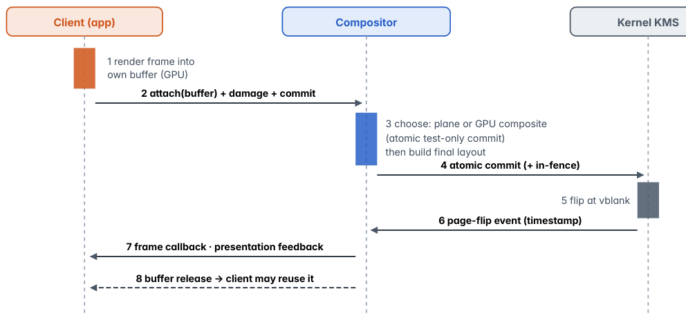
Several Wayland protocol extensions matter in embedded camera work: linux-dmabuf (clients share dma-bufs with format/modifier negotiation, so a camera frame can be shown without the client doing any rendering), presentation-time (precise feedback of when each frame was displayed), viewporter (scaling and cropping by the compositor, possibly on a plane), wl_subsurface (a video surface inside an application window), and the explicit synchronisation protocol (linux-drm-syncobj), which passes fences with buffers instead of relying on implicit kernel synchronisation.
Weston and the IVI shell
Weston is the reference Wayland compositor and the one most SoC vendors (TI, NXP, Renesas, NVIDIA Jetson, Qualcomm Linux) ship. Desktop compositors use the xdg-shell protocol, where applications request windows and users move them. A car has no user dragging windows; instead an HMI controller decides layout. Weston's IVI shell (from the GENIVI / COVESA projects) implements this: each application surface gets a numeric ID, surfaces are placed into layers on screens, and a separate controller process sets position, size, visibility and opacity through the ivi-layer-management interface. The surround-view application simply creates its surface with its ID and renders; the system decides where and when it is visible.
8.4NullWS and other ways to run without a window system
A compositor is useful when several applications share a screen. When one application owns a display completely — an early rear-view camera, a dedicated ADAS display, a mirror-replacement monitor, a test bench, a single-purpose HMI on an RTOS — the compositor is just extra boot time, latency, memory and code to qualify. So every graphics stack has a way to render directly to the display:
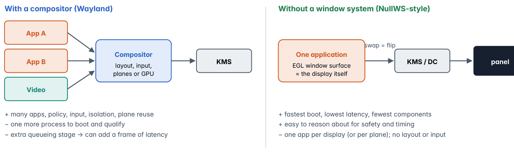
eglSwapBuffers.| VARIANT | WHERE YOU MEET IT | HOW IT WORKS |
|---|---|---|
| NullWS | Imagination PowerVR drivers — TI Jacinto, Renesas R-Car, on Linux and QNX/RTOS builds | "Null window system": an EGL platform with no native windowing. The window surface maps to the display (or a chosen plane), and eglSwapBuffers becomes a flip. Selected when the driver package is built or via a window-system plugin. |
| EGL on GBM + KMS | Mesa and most vendor Linux drivers | The standard Linux way: allocate scanout-capable buffers with GBM, render with EGL's GBM platform, put each finished buffer into a KMS framebuffer and flip with an atomic commit. kmscube is the reference example. |
| EGLDevice + EGLOutput / EGLStreams | NVIDIA DRIVE and Tegra | EGL enumerates GPUs and display outputs (layers) directly; an EGLStream connects the GL producer to a display-layer consumer, with no window system. |
| fbdev EGL | Older Mali / legacy BSPs | Rendering into the old Linux framebuffer device; no planes or atomic updates — legacy only. |
A direct-to-display application needs to be DRM master. If Weston is also running, one of them fails to set the mode or to flip, and the symptom is a black screen or an application frozen on its first frame. Decide per display (or per plane, where the driver supports leasing planes) who owns it. Linux DRM leases let a compositor hand a connector, CRTC and planes to another process for exclusive use — a clean way to combine a compositor with a direct-rendering camera view.
8.5Beyond Linux: QNX Screen and Android
Many cockpit and ADAS ECUs run QNX, often next to Linux or Android in virtual machines. QNX Screen is QNX's composited windowing system: applications create windows with buffers, and Screen composes them using display pipelines (hardware planes) or the GPU — conceptually close to a Wayland compositor with direct plane assignment, and the usual home of instrument clusters. Display drivers below it are often written against OpenWF Display (OpenWFD), a Khronos API for display controllers. Android Automotive uses SurfaceFlinger with the Hardware Composer (HWC) HAL, which decides per frame which layers go to planes; rear-view cameras use the Exterior View System (EVS), a dedicated path that can start early and bypass much of the Android framework.
"On Linux, only one process can own the display, so when several applications share a screen we use a Wayland compositor — Weston with the IVI shell, where an HMI controller places surfaces by ID. A good compositor passes client buffers straight to hardware planes, so it costs little. For single-purpose displays like an early rear camera we run without a window system — NullWS on PowerVR, GBM/KMS on Mesa, EGLDevice on NVIDIA — same rendering code, faster boot, fewer moving parts."
9Pipelines and asynchronous execution
Every engine in the SoC works in parallel on a different frame, like stations on an assembly line; fences are the notes passed between stations that say "this buffer is ready" — and the number of buffers waiting between stations is what decides latency.
9.1The assembly line
If each stage waited for the previous one to finish the whole frame, then for the next frame to complete all stages, a pipeline with 33 ms of sensor time, 8 ms of ISP, 10 ms of GPU and a 16.7 ms display period could not even reach 15 frames per second. Instead, every stage works on a different frame at the same time: while the display shows frame N, the GPU renders N+1, the ISP processes N+2 and the sensor exposes N+3. Throughput is set by the slowest stage; latency is the sum of all stages plus the waiting between them.
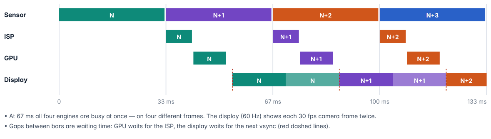
9.2The GPU is a separate, asynchronous processor
A common misunderstanding is that glDrawArrays draws something. It does not: GL and Vulkan calls only record commands into a buffer. The driver submits them to the GPU later — when the buffer is full, on glFlush, or on eglSwapBuffers — and the GPU executes them while the CPU is already preparing the next frame. The CPU typically runs one or two frames ahead of the GPU. This is good for throughput, and it means that any call which needs a result from the GPU forces the CPU to stop and wait for everything queued before it:
glFinish()— waits for all GPU work. Occasionally useful in debugging; in a product it serialises CPU and GPU.glReadPixels()into client memory — must wait until the frame is rendered, then copies. Use a pixel buffer object (PBO) and read it one or two frames later, or better, share the buffer with the consumer.- Mapping a buffer that the GPU is still using, or calling
glGetErrorin tight loops on some drivers.
9.3Fences: "this buffer is ready"
When engines run asynchronously, each buffer needs a clear rule about who may touch it when. The mechanism is a fence: a lightweight object that starts unsignalled and is signalled by hardware when a piece of work completes. Instead of the CPU waiting, the fence is handed to the next engine, which waits on it in hardware — the CPU never blocks.
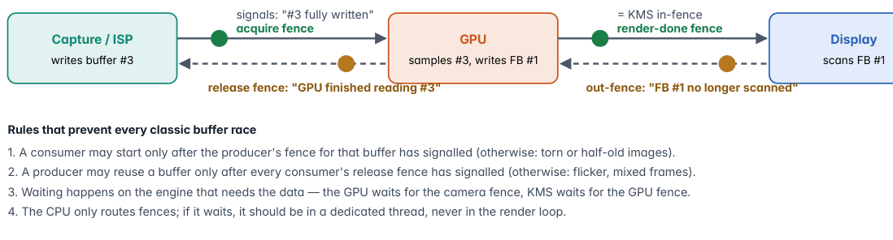
On Linux the kernel object is a dma-fence; user space sees it as a sync_file file descriptor that can be passed between processes and to other drivers, and polled. Two styles coexist:
Fences are attached invisibly to the buffer itself (its reservation object). When the GPU driver imports a dma-buf, it automatically waits for whatever is attached. Easy, and the traditional Linux and Mesa model — but it can over-synchronise (waiting for unrelated readers) and it hides what is happening when debugging stalls.
Fences are passed as separate objects alongside buffers: KMS IN_FENCE_FD / OUT_FENCE_PTR, the Wayland explicit-sync protocol, Vulkan semaphores, Android's sync fds, NVIDIA's NvSciSync. More code, but precise, visible and essential for multi-process, multi-VM and Vulkan pipelines.
// Explicit sync from GLES: create a native fence after rendering and hand its fd to KMS
EGLSyncKHR s = eglCreateSyncKHR(dpy, EGL_SYNC_NATIVE_FENCE_ANDROID, NULL);
glFlush(); // make sure the work is submitted
int fence_fd = eglDupNativeFenceFDANDROID(dpy, s); // sync_file fd, signals when rendering ends
// atomic commit: plane FB_ID = fb, IN_FENCE_FD = fence_fd → flip happens only after the GPU finished
// Import direction: wrap a camera's fence fd and make the GPU (not the CPU) wait for it:
EGLint a[] = { EGL_SYNC_NATIVE_FENCE_FD_ANDROID, cam_fence_fd, EGL_NONE };
EGLSyncKHR cam = eglCreateSyncKHR(dpy, EGL_SYNC_NATIVE_FENCE_ANDROID, a);
eglWaitSyncKHR(dpy, cam, 0); // server-side wait, returns immediately on the CPU9.4Queues, buffer counts and the latency trade-off
Between any two stages sits a queue of buffers. A deeper queue absorbs jitter — a GPU frame that occasionally takes 20 ms instead of 10 does not cause a drop — but every buffer that waits in a queue is a frame of age added to what the driver sees. For a camera monitor, an old frame is worse than a dropped one. Two presentation policies capture the trade-off:
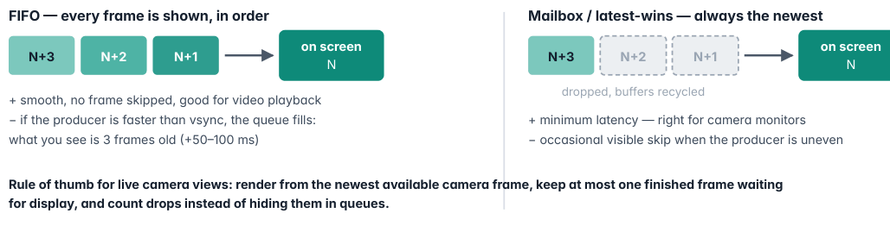
A practical sizing method: for each queue, count how many buffers can be "in flight" simultaneously — being written, waiting, being read — and add one spare. A V4L2 capture ring of 4–6 buffers, a render swap chain of 2–3, and a policy that the render loop always dequeues all available camera buffers and uses only the newest, are typical.
9.5When camera and display rates do not match
Camera and display run on independent clocks. A 30 fps camera on a 60 Hz display is easy: each frame is shown twice. But the clocks are never exactly 30.000 and 60.000 Hz, so the phase between them drifts and every few seconds a frame is shown once or three times — a periodic hitch. Rates that are not integer multiples are worse: a 25 fps camera (common for European-legacy sensors) on 60 Hz shows frames for 2 or 3 refreshes in a repeating pattern, which looks like judder on smooth motion.
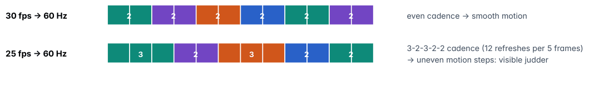
9.6Threads, priorities and the rest of the system
Asynchrony also exists on the CPU side. A typical surround-view process has a camera thread (dequeues buffers, tracks fences and frame counters), a render thread (owns the EGL context — only one thread may have it current), and a control thread (CAN signals like gear and steering angle, HMI requests). The render thread should never block on I/O; it should pick up the latest camera buffers and vehicle state, render, swap, and repeat. Real-time scheduling priorities for the render and camera threads, CPU isolation from heavy background services, and GPU priority (where the driver supports it) for the display path over perception compute jobs are what turn an average 60 fps into a guaranteed one.
"Our pipeline is an assembly line: sensor, ISP, GPU and display each work on a different frame in parallel. Buffers move with fences, so engines wait for each other in hardware and the CPU never stalls. Throughput is set by the slowest stage, latency by the number of queued frames — so for the camera view we always render the newest frame and keep queues shallow, and we watch the frame counter to make drops visible instead of hiding them in buffers."
10Debugging GPU and camera pipelines
Most pipeline bugs announce themselves with a recognisable picture — green, pink, sheared, scrambled, washed-out, torn — so the fastest debugger is a trained eye, followed by a systematic bisection of the pipeline with buffer dumps and the right trace tool.
10.1The mindset: bisect, don't guess
A wrong image on the display could have been broken by any of a dozen components. The productive approach is the one you would use for any signal chain: insert probes and find the first stage where the data is wrong. Every stage in a camera pipeline has a natural probe — a raw dump of the capture buffer, the ISP output, the GPU's render target, the KMS state — and once you know the first bad stage, the cause is almost always a mismatch in its input contract (format, stride, modifier, colour space, timing).
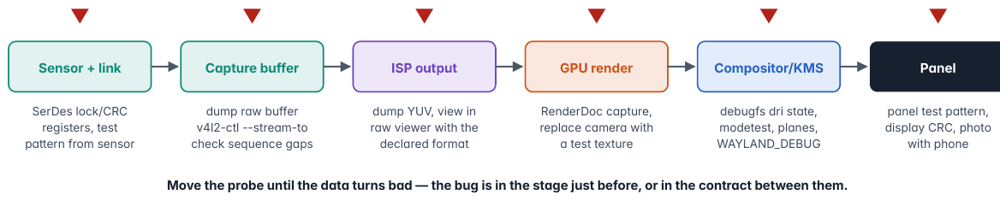
Write the buffer to a file exactly as it is in memory (including stride padding), note the declared width, height, stride, fourcc, modifier and colour space, and open it in a raw image viewer where you can change those parameters interactively. If the image looks right with different parameters than the ones the pipeline declares, you have found the mismatch. Remember to sync caches (chapter 4) and to convert tiled/compressed buffers to linear first.
10.2Symptom atlas
All images below are simulated from the same synthetic scene, encoded into a real NV12 buffer and then decoded the wrong way, exactly as a mismatched consumer would. Learn to recognise them; they cover most "the image looks weird" reports.
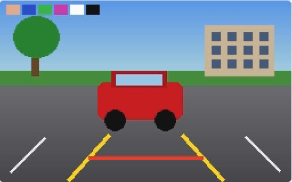
ReferenceCorrect decode: NV12, BT.709, full range, real stride.
Buffer all zeros — never written (capture not started, wrong buffer index, fence ignored). YUV(0,0,0) is green.
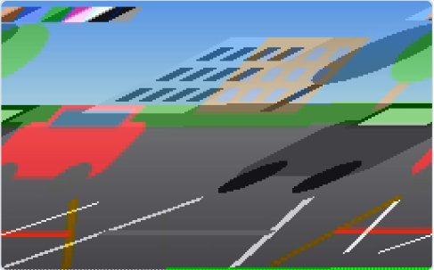
Diagonal shearWrong stride / pitch: each row starts a little off. Check pitch vs width and alignment.
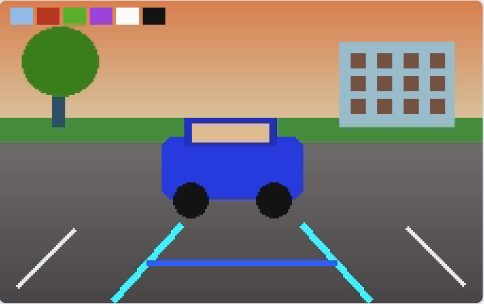
Red ↔ blue in colours, sky orangeU and V swapped: NV12 read as NV21 (or UYVY vs VYUY).
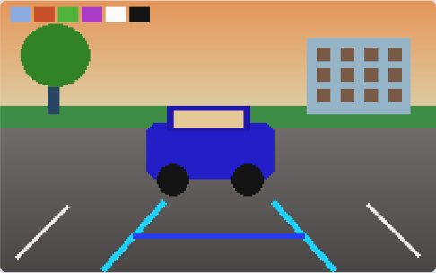
Red car turns blueRGB channel order swapped: RGBA vs BGRA, or ABGR fourcc confusion (DRM vs GL naming).
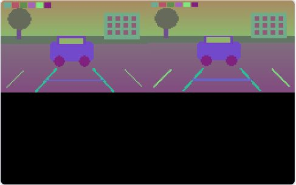
Two small copies, wrong coloursWrong bytes per pixel: 2-byte UYVY interpreted as 4-byte RGBA.
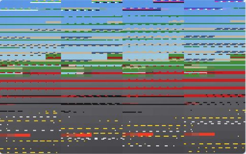
Scrambled blocksTiled or compressed buffer read as linear: modifier lost or ignored on import.
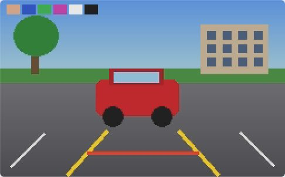
Washed out, grey blacksLimited-range data (16–235) decoded as full range.
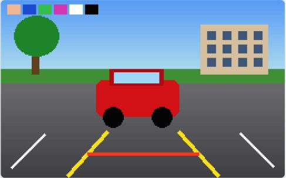
Crushed blacks, clipped highlightsFull-range data decoded as limited range.
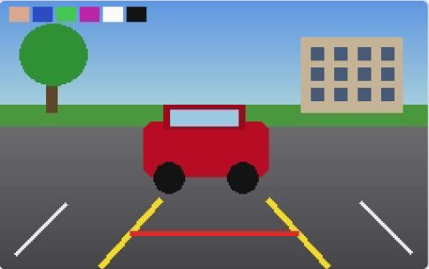
Slightly wrong reds and greensMatrix mismatch: BT.709 data decoded with BT.601 (or vice versa).
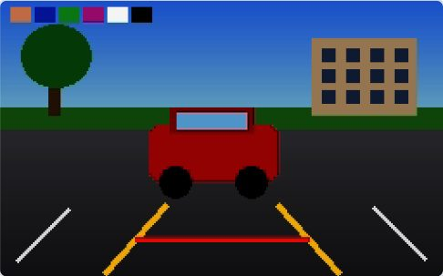
Too dark, too saturatedGamma applied twice (sRGB texture on already gamma-encoded data, or ISP + shader both).
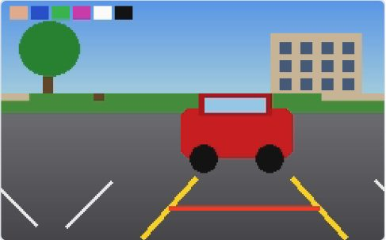
Horizontal break when movingTearing: flip outside vblank, single buffering, or writing a buffer still being scanned.
| SYMPTOM OVER TIME | LIKELY CAUSE | FIRST CHECK |
|---|---|---|
| Flicker of overlays or old frames flashing | Buffer reused before consumer finished; missing release fence; CPU cache not cleaned | Fence handling, buffer ownership, DMA_BUF_IOCTL_SYNC |
| Frozen image, UI still alive | Camera pipeline stalled; app keeps re-rendering the last buffer | V4L2 sequence, capture IRQ counts, SerDes lock, SMMU faults in dmesg |
| Periodic stutter every few seconds | Camera/display clock drift, frame cadence (chapter 9), GC or logging bursts | Timestamps of presented frames, CPU trace |
| Random corrupted lines | Link errors (CSI CRC), display underflow from bandwidth starvation | CSI error counters, display underflow IRQs, DRAM load |
| Image correct but 100+ ms late | Deep queues, FIFO presentation, compositor adding a frame | Presentation feedback timestamps, queue depths |
| Brightness pumping | AE oscillation: 3A using wrong frame's exposure | Embedded data vs 3A log |
10.3Black-screen triage
A black screen is the least informative symptom, so it needs a procedure. Work from the display backwards, each time replacing a complex input with a trivially correct one:
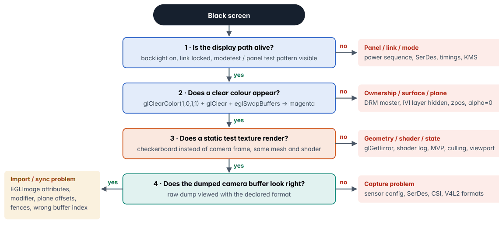
At the GL level, never debug blind: enable a debug context and register a callback with KHR_debug (glDebugMessageCallback) to get the driver's own error messages, check eglGetError() after every EGL call during bring-up, and always print shader compile and link logs. Many "black screen" reports are a shader that failed to compile on the target driver but compiled fine on the desktop.
10.4Tools worth knowing
| TOOL | WHERE | WHAT IT ANSWERS |
|---|---|---|
| RenderDoc | GLES, Vulkan; Linux, Android | Captures one frame: every draw call, bound textures (including camera images), shader inputs/outputs, pipeline state. The first tool for "rendered wrong". |
| apitrace | GL / GLES / EGL | Records all API calls to a file for replay on another machine, diffing and call-level inspection. |
| Nsight Systems, Nsight Graphics, tegrastats | NVIDIA | System-wide timeline of CPU threads, CUDA, GPU, NvMedia; frame debugging and GPU counters; live clock and load monitor. |
| Snapdragon Profiler | Qualcomm | Adreno GPU counters, timelines, shader analysis. |
| PVRTune, PVRCarbon | Imagination / TI | PowerVR hardware counters and timeline; API capture and replay. |
| Perfetto, ftrace / trace- cmd, KernelShark | Linux | Scheduling and kernel events, including DRM vblank, fence signalling and V4L2 buffer tracepoints — where did the time go between stages? |
| modetest, kmscube, debugfs | Linux DRM | modetest lists and sets KMS objects; kmscube proves GBM/EGL/KMS work; /sys/kernel/debug/dri/0/state shows the current plane/CRTC configuration. |
| v4l2-ctl, media-ctl, yavta | Linux V4L2 | Configure the media graph, set formats, stream and dump frames, show frame rate and dropped sequence numbers. |
| GStreamer + tracers | Linux | Quick capture-to-display prototypes; fpsdisplaysink, GST_DEBUG, GST_TRACERS=latency. |
| WAYLAND_DEBUG=1, weston debug | Wayland | Prints every protocol message; Weston's debug scopes show plane assignment decisions. |
10.5Measuring performance and latency
Average frame rate hides what users feel. Record per-frame timestamps at each stage — capture timestamp from V4L2, GPU start/end from timer queries (GL_EXT_disjoint_timer_query), presentation time from KMS page-flip events or Wayland presentation feedback — and look at distributions: 99th-percentile frame time, number of missed vsyncs, maximum age of a displayed frame. The difference between capture timestamp and presentation timestamp is the in-system latency; it excludes sensor exposure/readout and panel response, which only an external measurement captures.
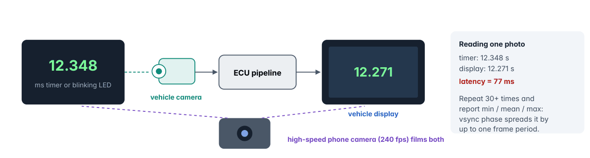
"We debug the pipeline like a signal chain: probe each stage with a raw dump until the data turns bad. Most image bugs have a signature — green means an empty buffer, a diagonal shear means wrong stride, swapped colours mean wrong channel order — so the first diagnosis often takes seconds. For performance we look at per-frame timestamp distributions, not averages, and we measure glass-to-glass latency externally with a timer and a high-speed camera."
11Platform specifics: NVIDIA, TI, Qualcomm
The three major automotive SoC families implement the same pipeline — capture, ISP, warp, AI, GPU, display — with very different philosophies: NVIDIA builds around a big GPU and CUDA, TI around a heterogeneous mix of fixed-function accelerators and DSPs orchestrated by OpenVX, and Qualcomm around a virtualised cockpit where cameras and displays are shared between operating systems.
Vendor names change with every generation, but the roles do not. The most useful thing to carry into a design review is a mapping from each role in the pipeline to the vendor's name for it — then any block diagram becomes readable. Product details below reflect public documentation as of 2025–2026; always confirm against the exact SoC variant and SDK release of your program.
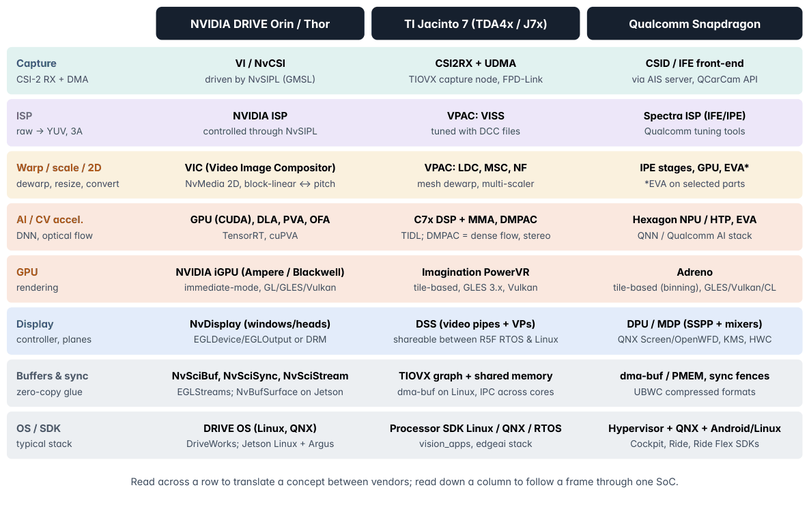
11.1NVIDIA DRIVE (Orin, Thor) and Jetson
Philosophy: one big programmable GPU, everything else feeds it. NVIDIA's automotive SoCs combine Arm CPU clusters with a large integrated GPU from its data-centre and gaming lineage (Ampere in Orin, Blackwell in Thor), plus dedicated deep-learning accelerators (DLA), a programmable vision accelerator (PVA), an optical-flow accelerator, the ISP, the VIC 2D engine and video codecs. CPU and GPU share the same DRAM, so CUDA kernels operate on camera buffers in place — no PCIe copies as with discrete GPUs. DRIVE OS (Linux or QNX) is the automotive software base; Jetson modules use the same silicon family with Jetson Linux for robotics and prototyping.
Camera path. On DRIVE, cameras attach over GMSL and are managed by NvSIPL (Sensor Input Processing Library), which configures sensors and SerDes, runs capture and the ISP, and delivers output buffers. On Jetson, the higher-level libargus API (and GStreamer's nvarguscamerasrc) wraps the ISP, and plain V4L2 serves sensors that output YUV.
Buffers and sync. NVIDIA solves the "will every engine accept this buffer?" problem explicitly with NvSciBuf: each engine (camera, ISP, CUDA, DLA, display) states its requirements as attributes, NvSciBuf reconciles them into one allocation all can use, and NvSciSync provides fences that every engine can wait on and signal in hardware. NvSciStream builds producer–consumer pipelines on top, even across processes and virtual machines. The older EGLStream mechanism connects producers (camera, CUDA) to consumers (GL textures, display layers) in a similar way.
Display. Rendering can go directly to display layers through EGLDevice + EGLOutput (no window system), or through a DRM/KMS driver and a compositor depending on the OS configuration. Display windows (planes) support YUV and scaling.
- Block-linear vs pitch-linear. GPU-friendly buffers are often block-linear (tiled). They look scrambled to the CPU; use VIC/NvMedia 2D or
NvBufSurfTransformto get pitch-linear copies for debugging or CPU algorithms. - The GPU is shared by rendering, CUDA pre-processing and possibly DNNs; without priorities or time-slicing configuration, compute bursts cause dropped display frames.
- Memory is unified, but caches still matter: use the provided sync APIs rather than assuming coherency for every engine.
11.2TI Jacinto 7 (TDA4x / J7x, AM6xA)
Philosophy: many specialised engines, each doing one job efficiently, orchestrated as a graph. TI's ADAS and vision SoCs (TDA4VM/J721E, TDA4VE/AL/VL/J721S2, TDA4VH/J784S4 and the related AM6xA parts) mix Arm Cortex-A72 cores for Linux or QNX with C7x DSPs plus a Matrix Multiply Accelerator (MMA) for deep learning, Cortex-R5F real-time cores (including an isolated MCU island for safety functions), and hardware accelerators: VPAC (Vision Pre-processing Accelerator) containing the VISS ISP, LDC lens-distortion correction, MSC multi-scaler and noise filter; and DMPAC (dense optical flow, stereo disparity). The GPU is an Imagination PowerVR (Rogue/BXS class depending on the part) — tile-based, OpenGL ES 3.x and Vulkan — and the DSS display subsystem provides several video pipes with blending and multiple outputs.
Camera path. Cameras connect via FPD-Link (TI's own SerDes) into CSI-2 receivers. The software framework TIOVX — TI's implementation of the Khronos OpenVX graph API — describes the pipeline as a graph of nodes (capture → VISS → LDC → MSC → DNN → display), each mapped to the right core or accelerator, with buffers passed in shared memory between them. TIOVX supports graph pipelining: several frames are in flight simultaneously, which is the assembly line of chapter 9 implemented by the framework. ISP tuning uses DCC (Dynamic Camera Configuration) files.
Display and window systems. On Linux, the PowerVR driver works with Weston (including the IVI shell) and with GBM/KMS; the direct-to-display NullWS mode of the PowerVR stack is the classic choice for single-application displays and RTOS/QNX builds. The DSS can be shared: an R5F core running an RTOS can own one pipe — for example an early rear-view camera or safety tell-tales — while Linux owns the others for HMI.
- Work spans several cores and operating systems; a "camera stall" may live in IPC between A72 and R5F or C7x firmware. Logs and traces from all cores are needed.
- Shared-memory carve-outs are sized at build time; adding cameras or resolution can require changing the memory map, not just code.
- LDC and GPU can both warp images: decide early which does what — LDC is efficient for fixed dewarp per camera, the GPU for 3D surround view with a moving virtual camera.
- Tile-based GPU: follow the rules of chapter 5 (no mid-frame readbacks, invalidate unused attachments).
11.3Qualcomm Snapdragon Cockpit, Ride and Ride Flex
Philosophy: a phone-class SoC, virtualised for the car. Qualcomm's automotive platforms — Snapdragon Cockpit (e.g. SA8155P, SA8295P and successors) for infotainment and cluster, Snapdragon Ride for ADAS, and Ride Flex for combined cockpit and ADAS — bring smartphone heritage: Kryo/Oryon CPUs, the Adreno GPU (tile-based "binning" architecture), the Spectra ISP, Hexagon DSP/NPU for AI, the display processor (DPU / MDP with source pipes and layer mixers) and pervasive UBWC lossless compression across ISP, GPU, video and display.
Virtualisation is the defining feature. A typical cockpit runs a hypervisor with a QNX host (cluster, safety, display and camera ownership) and one or more guests — Android Automotive for infotainment, Linux for other functions. Cameras are owned by an automotive camera service (commonly referred to as AIS, with the QCarCam API on QNX/Linux) that can share streams with guest VMs; on the Android side the rear camera is presented via EVS. The GPU and display are shared between VMs with hardware support, so one physical display can show surfaces from several operating systems.
Display. On QNX, QNX Screen with an OpenWFD display driver; on Linux, DRM/KMS; on Android, SurfaceFlinger with Hardware Composer. The DPU has many source pipes with YUV and scaling support, so plane-based composition is the norm.
- UBWC everywhere. Buffers are compressed and tiled by default; a CPU dump or a third-party consumer that ignores the UBWC flag sees garbage. Request linear buffers explicitly for debugging or for consumers that cannot decode UBWC.
- Which VM owns the camera, the GPU context and each display plane is a system-integration decision; many "it works on the reference build" issues are ownership or virtualisation configuration.
- Latency through a virtualised path includes inter-VM hand-over; measure it rather than assuming native numbers.
11.4Side by side
| TOPIC | NVIDIA | TI JACINTO 7 | QUALCOMM |
|---|---|---|---|
| Centre of gravity | Large GPU + CUDA ecosystem | Dedicated accelerators + DSPs, low power | Phone-class SoC, virtualised cockpit |
| GPU architecture | Immediate-mode, very capable | PowerVR tile-based, modest | Adreno tile-based (binning), strong |
| Typical sweet spot | High-end ADAS / AD, multi-camera fusion | Entry/mid ADAS, surround view, parking, fusion at low power | Cockpit, cluster + IVI, scalable ADAS |
| Pipeline framework | NvSIPL, NvSci*, CUDA, DriveWorks | TIOVX (OpenVX graphs), vision_apps | AIS/QCarCam, QNN, Android camera stack |
| Zero-copy glue | NvSciBuf/NvSciSync, EGLStream | Shared memory + graph, dma-buf | dma-buf/PMEM, UBWC-aware allocators |
| Direct-to-display | EGLDevice / EGLOutput | PowerVR NullWS, GBM/KMS, RTOS DSS | QNX Screen, OpenWFD, KMS |
| Native layout to watch | Block-linear | Mostly pitch-linear | UBWC compressed |
| Profiling tools | Nsight Systems/Graphics, tegrastats | PVRTune, PVRCarbon, TI perf stats | Snapdragon Profiler |
Other platforms you will meet. Renesas R-Car (PowerVR GPUs, dedicated image-rendering/distortion engines, strong in surround view), NXP i.MX 8/9 (Vivante or Mali GPUs, Linux-centric), Mobileye EyeQ (closed perception SoC), Ambarella CV-series (strong in-house ISP and CV engines), and Chinese ADAS SoCs such as Horizon Robotics' Journey and Black Sesame's Huashan. The concepts in this guide apply unchanged; only the names in Figure 11.1 differ.
"All three vendors run the same pipeline — capture, ISP, warp, AI, GPU, display — but differ in philosophy. NVIDIA centres on a big GPU and CUDA with NvSci for zero-copy; TI uses dedicated accelerators like VPAC and C7x orchestrated by OpenVX, very power-efficient, with a modest tile-based GPU; Qualcomm brings a phone-class SoC with a hypervisor, sharing cameras and displays between QNX and Android. When we evaluate or port, we map each role to the vendor block and check the buffer format they natively use — block-linear, pitch-linear or UBWC."
12What makes it automotive
The same pipeline in a phone and in a car differ in four ways that drive architecture: the camera must appear seconds after power-on, a wrong or frozen image is a safety hazard, several operating systems share one chip, and everything must keep working at 85 °C for fifteen years.
12.1Early camera: the two-second problem
US regulation FMVSS 111 requires the rear-view image to be displayed within 2.0 seconds of the driver selecting reverse — and a driver may select reverse right after starting the car, while the infotainment SoC is still booting. A full Linux or Android system with a compositor and HMI framework often needs 5–20 seconds to reach its first frame. The solution is a split boot: a small, fast path shows the camera first, and the full system takes over later without the driver noticing.
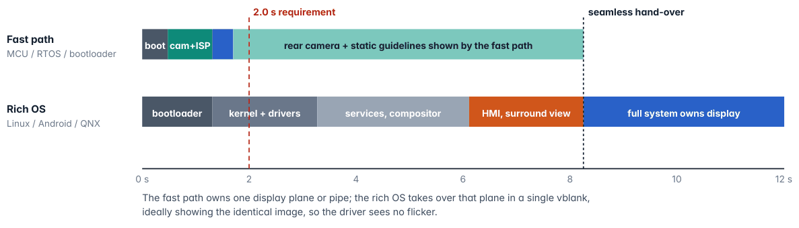
Engineering the fast path is mostly about removing work from the boot: a minimal driver set, pre-tuned fixed ISP settings (3A converges later), pre-compiled shaders or no GPU at all (a display plane shows the YUV camera image directly, guidelines as a static overlay), memory and buffers reserved in advance, and a defined hand-over protocol so the rich OS can take the plane without a black frame.
12.2Functional safety for camera and display
ISO 26262 asks what happens when the system fails. For a camera view, the dangerous failures are not "no image" — a black screen is obvious and the driver stops trusting it — but plausible wrong images: a frozen frame that looks live, a stale image delayed by seconds, an image from the wrong camera or mirrored, guidelines misplaced. Rear-view and surround-view display functions are therefore often assigned an integrity level up to ASIL B, and the architecture must detect these failures within a fault-tolerant time interval and switch to a safe state (typically: blank the view and show a warning).
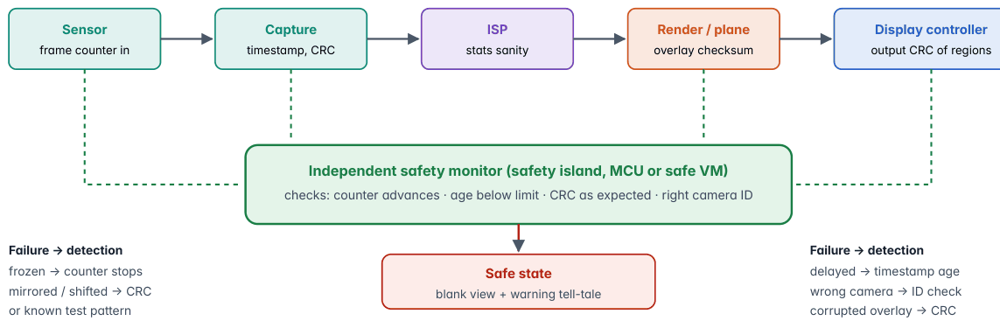
Two patterns recur. Safety-relevant content via a safe path: tell-tales and sometimes the camera view are composed by a display plane owned by a safety core, independent of the GPU and the rich OS. Checking instead of trusting: the GPU and Linux remain non-safety (QM) software, and correctness is established by an independent monitor verifying the output — region CRCs computed by the display controller after blending are the key hardware feature here. For perception, the complementary standard is ISO 21448 (SOTIF): even a pipeline that works as specified can produce hazardous results when the ISP tuning, exposure or rolling-shutter behaviour meets a situation the network was not trained for; ISP configuration therefore belongs in the perception system's validated configuration.
12.3Mixed criticality and virtualisation
Car makers consolidate ECUs: one SoC now runs the cluster (safety-relevant, QNX or RTOS), infotainment (Android Automotive), and sometimes parking and ADAS functions. A hypervisor separates them into virtual machines, and the resources this guide has discussed must be partitioned or shared: cameras (one owner, others receive shared buffers), GPU (time-sliced or hardware-partitioned, with priority for the safety VM's rendering), display (planes or pipes assigned to VMs, with the safety VM controlling the final composition or at least its own plane), and memory (IOMMU/SMMU-enforced isolation so a guest's DMA cannot reach another VM's buffers). Freedom from interference — proof that a crashing infotainment VM cannot delay the cluster's frames — becomes an architectural deliverable, and bandwidth (chapter 1) is part of it: a memory-hungry guest can starve a display controller unless QoS is configured.
12.4Environment, thermal and lifetime
Automotive ECUs work across −40 to +85 °C ambient or more, often without fans. GPUs and NPUs reduce their clock frequency when hot (thermal throttling), so a surround view that renders in 10 ms on the bench may need 18 ms in a parked car in summer. Performance budgets must be met at the throttled clock, with headroom, and the frame-drop and latency KPIs validated in a climate chamber. The same platform must also be supported for many years — GPU driver versions, shader compilers and SDKs are frozen and qualified per program, which is why "just upgrade the driver" is rarely an option late in a project.
12.5Security in one paragraph
Camera and display pipelines handle data from outside the vehicle and touch privileged hardware. The relevant measures: signed and verified firmware for ISP, GPU and DSP cores; IOMMU isolation of every DMA-capable engine; minimal exposed interfaces in the window system (Wayland's isolation is an improvement over X11); careful handling of recorded video (privacy regulations such as GDPR apply to stored camera footage); and the cybersecurity process of ISO/SAE 21434 and UN R155 for the vehicle as a whole.
"Automotive adds four constraints to the camera pipeline: the rear image must be on screen within two seconds of selecting reverse, so we use a fast boot path that hands over seamlessly; a frozen or stale image is a hazard, so an independent monitor checks counters, timestamps and display CRCs and can blank the view; several operating systems share the SoC, so cameras, GPU, planes and memory are partitioned with freedom from interference; and all budgets must hold at throttled clocks in the heat."
13AR overlays: from a map arrow to correctly placed pixels
An augmented-reality overlay is a graphic that claims to sit on a real object: an arrow on the lane to turn into, a carpet on the route, a marker on the car ahead. The rendering is the easy part. The hard part is that the drawn pixel and the real point must coincide for the viewer, through a chain of a dozen coordinate transformations, each with its own error and its own clock.
13.1Registration: why AR is harder than drawing a graphic
Most of what a car's displays show is screen-fixed: a speed readout, a gear indicator, a list of songs. If such a graphic is three pixels off, nobody notices. An AR graphic is world-fixed (in the HUD literature also called contact-analog): it is defined in the coordinates of the road, and it is only correct if, at the moment the driver looks at it, it covers the real thing it refers to. This property is called registration, and the error between where the graphic is and where it should be is misregistration. An arrow that is drawn half a lane to the side, or ten metres too early, is not a cosmetic defect: it points at the wrong exit.
Cars use two kinds of AR display, and the difference between them shapes every later section. In video see-through AR, the overlay is drawn onto a camera image shown on the centre display or the cluster. The driver sees a picture of the world, so image and overlay can be made consistent with each other even if both are late. In optical see-through AR, the overlay is light added to the driver's direct view of the road, through a head-up display (HUD). The real road has no delay, no distortion and no crop, so the overlay has to match the world as the driver's eyes see it, from wherever the driver's head happens to be.
Both share the upstream question, which belongs to the navigation stack: what is the next manoeuvre, where exactly is the target lane, and where is the car relative to it. The Planning and control chapter follows that data chain and shows why lane-level localization and live pitch estimation decide whether the feature works at all. This chapter starts where that one stops: a 3D point on the road is known, and it has to become the right pixel.
Registration errors are visible to every driver on every drive, and they are judged harshly: an overlay that swims, lags in bends or sits on the roof of the car ahead destroys trust in the whole system, including the parts that work. AR is also one of the few infotainment features whose requirements on timing and calibration are close to those of driver assistance, so it exposes weaknesses in the shared infrastructure early.
13.2Following one arrow through the transformation chain
Take one concrete point: the tip of a lane-change arrow, on the centre of the lane to the right, 40 m ahead of the camera. Figure 13.1 follows it through every frame of reference, and the stepper below walks through the steps with real numbers from experiments/ar_chain.py. The camera sits 1.3 m above the road and looks 1° down; it has a focal length of 1200 px on a 1920×1080 image, which is a 77° horizontal field of view. The driver's eye is 1.2 m above the road, 0.37 m to the left of the car's centre line. The HUD has a 10°×4° field of view, a virtual image 10 m away, and 1200×480 pixels.
The route and the lane geometry come from the map, in a global frame. Renderers never work in latitude and longitude directly: the map data is converted to a local east-north-up (ENU) plane with its origin near the car, so that coordinates stay small. Our arrow tip is at E 1288.12 m, N 847.97 m in that plane. Its error here is the map's own accuracy: where the lane centre really is.
Localization gives the car's pose in the same plane: position E 1250.0, N 830.0 and a heading of 30°. Applying the inverse of that pose (subtract the position, rotate by −30°) puts the tip at (42.0, −3.5, 0) m in the vehicle frame: 42 m ahead of the rear axle, 3.5 m to the right, on the ground. Every error of the localization lands here unchanged: a 0.2° heading error alone moves the tip 0.14 m sideways at 40 m.
The vehicle frame is fixed to the chassis, but the chassis pitches and rolls on its suspension: nose down when braking, up when accelerating, tilted under load. The camera and the HUD are mounted on the body, so the transformation to them must include the current body pitch and roll relative to the road surface. These are estimated live, from the IMU, from the vanishing point of lane markings, or from the road plane seen by perception. This is the step where the largest errors hide, as the next section shows.
The extrinsic calibration (rotation R and translation t of the camera relative to the vehicle frame, measured at the end of the production line and refined online) moves the point into the camera's optical frame: X to the right, Y down, Z forward. The tip is now at (3.50, 0.60, 40.0) m, 3.5 m right of and 0.6 m below the optical axis, 40 m in front of the lens.
The intrinsics project it: u = cx + f·X/Z, v = cy + f·Y/Z gives pixel (1065, 558). The real camera also has lens distortion, which moves the point further and must be applied with the same model that describes the image (section 13.4). The overlay must also be computed for the instant this image was exposed, which is a timestamp question, not a geometry one.
The display rarely shows the camera image one to one. Here the full image is scaled to a 1280×720 display by 2/3, so the tip lands on display pixel (710, 372). In real products this step also includes crops, digital zoom, a virtual-camera warp, or a mirror flip for rear cameras; the overlay must go through exactly the same transform as the image.
For the HUD, the reference is the driver's eye, not the camera. From the eye position the tip is seen 5.38° to the right and 1.67° below the horizontal. The eye position comes from the driver-monitoring camera's head tracking (In-cabin sensing 4.1) or, in simpler HUDs, from a fixed design eye point adjusted with a height setting.
Angles map to pixels on the virtual image: 1200 pixels over 10° is 120 pixels per degree, so 5.38° to the right is column 1245, beyond the right edge at 1200. The target lane at 40 m is outside the HUD's field of view as seen from the driver's seat on the left. The same tip 60 m ahead appears 3.62° right and fits (column 1035). This is a real design constraint: it is why AR-HUD programmes push for 12° and more horizontally, and why lane-change arrows are often drawn further ahead.
Finally, the mirrors and the curved windscreen distort the virtual image, and differently for each eye position. A warp map, calibrated at the end of the line for a grid of eye positions and interpolated with the tracked eye position, pre-distorts the rendered image so that it looks straight after the optics. Its residual error, often below a few arcminutes, is the last entry in the budget.
Two practical details decide whether this chain can even be computed correctly. First, precision: a single-precision float has a 24-bit mantissa, so a coordinate around 6.4 million metres (the size of Earth-centred coordinates) is quantised in steps of 0.5 m. Doing the map-to-vehicle step in single precision on the GPU produces arrows that jump by half a metre. The fix is the one shown: subtract a local origin in double precision on the CPU and give the GPU small numbers. Second, time: every transform in the chain is valid only at one instant. The pose belongs to a timestamp, the image to its exposure time, the eye position to the DMS frame, and they must be brought to a common instant (section 13.6).
Teams often test the chain with the car standing still and the camera calibrated on a flat floor, and everything lines up. On the road, the overlay "breathes" with braking and bumps. The static test only proved steps 4 to 6; the moving test exercises steps 2 and 3, where the dynamic errors are.
13.3Why small angles become large distances
The geometry of a road seen from 1.2 to 1.3 m height is unforgiving in one direction and forgiving in the other. Sideways, an angular error ε moves a point at distance D by about D·ε: 1° at 40 m is 0.70 m, a fifth of a lane. Along the road, the error is far worse, because rays to distant road points are almost parallel to the road surface. A point 40 m ahead is only 1.86° below the camera's horizontal; 60 m is 1.24°; 80 m is 0.93°. A 0.5° pitch error that draws the point too low makes it appear at 31.5 m instead of 40 m; the same error in the other direction puts it at 54.7 m, and for a point at 80 m it lifts the drawn position to 173 m. The error is not symmetric, and beyond some distance a small upward error puts the graphic above the horizon, where it no longer touches the road at all.
Figure 13.2 lets you combine the error sources. Its model is the one of this section: vertical angular error from pitch (and, for the HUD, from eye-position parallax), horizontal error from heading and from uncompensated delay in a bend, converted to positions on the road.
Three lessons come out of playing with it. Longitudinal errors dominate, and they come almost entirely from pitch, so the vertical channel deserves most of the engineering effort: live pitch estimation, a stiff camera mount, and an accurate road model where the road is not flat. Lateral errors come from heading, lateral position and delay in bends, and they are the ones that put an arrow in the wrong lane. And far-field content is fragile by nature, which is why good AR designs keep distant graphics deliberately soft, for example a carpet that fades out between 50 and 80 m instead of a sharp arrow tip at 80 m.
Camera 1.3 m high, point 40 m ahead: 0.1° of pitch moves it to 38.0 or 42.3 m; 0.25° to 35.3 or 46.2 m; 0.5° to 31.5 or 54.7 m. 1° of heading or 100 ms at 10°/s yaw moves it 0.70 m sideways; half a lane is 1.75 m. Source: experiments/ar_chain.py and check_interactive.js.
13.4The camera-image path: distortion, crops and mirrors
On a centre display the overlay is drawn on top of a camera image, and the image itself has been transformed: undistorted or not, cropped, scaled, possibly warped into a virtual top view or flipped. The rule that avoids most bugs is simple to state: the overlay must go through exactly the same camera model and the same view transform as the pixels underneath it. If the displayed image is the raw fisheye picture, the overlay must be projected with the fisheye model, distortion included; if the image was undistorted into a pinhole view, the overlay uses the pinhole model of that virtual view, not of the physical lens.
Distortion creates a rendering problem as well as a modelling one. A rasterizer draws straight edges between projected vertices, but a straight line on the road is curved in a fisheye image. A long guide line drawn as two vertices comes out straight and wrong; the remedy is to tessellate lines and carpets finely (a vertex every few pixels on screen) and apply the distortion per vertex in the vertex shader, or to render the overlay in an undistorted space and push it through the same remap mesh as the camera image (Rasterization vs path tracing 8.1 explains why a rasterizer cannot produce fisheye geometry directly). Static parking guidelines are the simplest case of this and are covered in Camera geometry 7.3.
Rear cameras add a classic trap: the image is shown mirrored, so that the display behaves like a rear-view mirror and objects on the left appear on the left. Overlays computed in vehicle coordinates must be mirrored with it, and so must any text, which then has to be drawn unmirrored on top. A guideline that bends the wrong way when steering is often this bug, not a calibration error.
Build a debug mode that draws known world points (calibration targets, the lines of a test hall) through the full overlay chain onto the live image. If those points sit on their targets at standstill and while driving over a bump, the chain is right. Keep the mode in the product (GPU programming for surround view, appendix B), because the same check is needed after a windscreen or camera replacement in service.
13.5Depth and occlusion
The human visual system judges depth from many cues, and occlusion is one of the strongest: what covers something else is in front of it. An overlay drawn over everything breaks this cue. A route carpet that continues across the car ahead looks as if it were painted on that car's roof, and the brain reads the scene as wrong even when the geometry is exact (Figure 13.3a). The renderer therefore needs to know which pixels are covered by real objects nearer than the virtual one.
On the camera path there are two practical approaches. The precise one (b) renders a mask of the near objects into the stencil or depth buffer, from a segmentation network or a depth estimate aligned with the same frame, and draws the overlay with a stencil or depth test so covered pixels are skipped. It costs a perception output at frame rate and pixel-accurate alignment with the image; a mask from the previous frame produces a visible fringe on moving objects. The robust one (c) uses the object list that perception already produces: the overlay is clipped at the distance of the nearest object on the route, or fades out before it. It is less exact at the edges, but it degrades gracefully and needs no per-pixel data.
In a HUD, true occlusion is physically impossible: the display can only add light, never darken the real car. Masking still matters, because a bright carpet on top of the lead vehicle is exactly the confusing case, so HUDs use the clipping approach and avoid drawing over objects. The HUD also has a depth problem that a screen does not have. Its image lies at a fixed virtual image distance (VID), say 10 m, while the arrow is meant to lie on the road at 40 m. With an interpupillary distance of 65 mm the two eyes see the arrow and the road point 0.28° (17 arcminutes) apart in binocular disparity; with a conventional 2.5 m VID it would be 1.4°, which makes the graphic visibly float in front of the road. This is the main optical reason AR-HUDs place the virtual image far away.
Focus is less of a problem than disparity. The eye's accommodation is measured in dioptres (1/distance): a 10 m virtual image and a road point at 40 m differ by 0.075 dioptre, well inside the eye's depth of field, while 2.5 m against 40 m is 0.375 dioptre. A far virtual image therefore lets the driver see graphic and road sharp at the same time.
13.6Latency and motion-to-photon
Latency affects the two display types in opposite ways, as Figure 13.4 shows. On the camera image the whole picture is late anyway: the frame shown on the glass was exposed 50 to 100 ms earlier (section 1.3). That is acceptable for a video, and the overlay does not need to be fast; it needs to be consistent. It must use the vehicle pose at the exposure time of the very frame it is drawn on, interpolated from the pose history, the same principle as ego-motion compensation in sensor fusion (Calibration and fusion 6.2). If the renderer uses "the latest pose" instead, the overlay leads the image by the pipeline delay and swims in every bend. With a rolling shutter the exposure time even varies by row, about 30 ms from top to bottom, which at 10°/s yaw is a 0.3° skew across the frame.
In a HUD there is no image to be consistent with: the driver sees the real road with zero delay. Every millisecond between sampling the pose and emitting the light is misregistration, and the quantity that matters is motion-to-photon latency. At a yaw rate of 10°/s, 100 ms shifts the overlay by 1°, which is 0.70 m at 40 m; bumps excite pitch rates of several degrees per second, and 5°/s for 50 ms is already 0.25° vertically. Published targets reflect this: commercial AR-HUD systems advertise motion-to-photon latencies below 50 ms at 60 frames per second, and research on automotive AR suggests that around 20 ms is needed for graphics to feel attached to the world.
Three techniques get there, usually combined. Prediction: the renderer does not draw the scene for the pose at sampling time but for the pose extrapolated to the expected photon time, using the current yaw rate, speed and pitch rate; a constant-turn-rate model removes most of the error in steady bends. Late warp (called timewarp or reprojection in VR headsets): after the frame is rendered, a final cheap pass shifts and rotates it using the freshest IMU sample, a few milliseconds before scanout, so the prediction horizon shrinks from the whole pipeline to that last step. Short pipeline: render at the display rate with one buffer in the queue, use a hardware plane for the HUD image, and avoid the extra frame of a general-purpose compositor (section 9.4).
Prediction needs accurate timestamps on everything: the IMU sample, the pose, the vsync of the HUD panel. A pose stamped when it was received instead of when it was measured adds the transport delay to every prediction, and the overlay lags by a constant that no tuning of the motion model removes. Measure the delay with a high-speed camera filming the HUD and the road during a slalom, not with logs alone.
13.7Head-up displays: optics, eyebox and warping
A HUD is a projector whose screen is the windscreen. A picture generation unit (PGU) in the dashboard makes an image; one or two mirrors fold and magnify it; the windscreen reflects it towards the driver, who sees a virtual image floating beyond the glass (Figure 13.5). Common PGUs are a TFT LCD with a strong LED backlight, a DLP micromirror projector onto a diffuser, LCoS with laser illumination, or a laser beam scanned by a MEMS mirror. The choice trades brightness, contrast (an LCD leaks a grey "postcard" of backlight in the dark), size and cost.
Four optical quantities describe a HUD. The virtual image distance is where the image appears: about 2 to 2.5 m for conventional HUDs that show speed and simple symbols, and roughly 7 to 15 m for AR-HUDs, for the disparity reason of section 13.5. The field of view is the angle the image covers: about 5 to 7° by 2° for conventional HUDs and around 10 to 12° by 4° for AR-HUDs, where 4° vertically at a look-down angle of about 2.7° covers the road from roughly 15 to 100 m in our geometry. The eyebox is the region where the eyes must be to see the full image, typically at least 130 by 60 mm, with the image height adjustable for tall and short drivers. The look-down angle places the image just below the line of sight to the road, a few degrees.
These numbers are expensive. The volume of the optics grows quickly with the field of view and the virtual image distance, which is why AR-HUDs need ten litres or more of dashboard space, and doubling either the field of view or the eyebox roughly doubles the light the PGU must produce to stay readable against a sunlit road. The same optics that magnify the PGU also concentrate sunlight that enters backwards onto it, so thermal design and infrared-blocking coatings are part of every HUD. The windscreen is part of the optical system: its inner and outer surfaces each reflect the image, which would produce a double image, so HUD windscreens contain a wedge-shaped interlayer that makes the two reflections coincide. Replacing a windscreen with a non-HUD one is a service problem for that reason.
Because the windscreen is curved and the mirrors are freeform, the virtual image is distorted, and the distortion depends on where in the eyebox the eye is. The software answer is a warp map: a mesh that pre-distorts the rendered image so that it appears straight. AR-HUDs calibrate a set of these maps at the end of the line, with a camera placed at a grid of eye positions, and interpolate between them every frame with the eye position from the driver-monitoring camera (dynamic distortion compensation). The warp is a mesh-based remap of exactly the kind used for surround view (GPU programming for surround view 10.3), usually merged with the late warp of section 13.6 into one final pass.
"An AR-HUD is a projector in the dashboard that uses the windscreen as a mirror and puts the image about ten metres ahead. The far image is what lets the arrow sit on the road without the eyes having to refocus or seeing it double. The software has three jobs on top of normal rendering: predict the car's pose to the moment the light leaves the HUD, correct the windscreen distortion for where the driver's eyes are right now, and keep the misregistration budget, mostly pitch, under control."
13.8An error budget for misregistration
Because every step of the chain contributes, AR projects need an explicit error budget, the same way they need a latency budget. The method is mechanical. List every error source with a realistic one-sigma value; convert each into an angle as seen from the viewer; convert angles into lateral and longitudinal position errors at the design distance; and combine them, as a root-sum-square if they are independent and as a plain sum for a worst case. Figure 13.6 does this for an AR-HUD arrow 40 m ahead with illustrative values: they are plausible targets, not measurements of a product.
The budget turns arguments into engineering. It shows that improving the windscreen warp further buys almost nothing while residual pitch costs metres; that eye tracking matters more for a short virtual image distance (the parallax term scales with 1/VID − 1/D); and that the graphics must be designed for the error that remains, for example by marking the turn with a carpet that spans the junction rather than a pin-point arrow. It also gives each supplier in the chain a number: the localization team a heading accuracy, the HUD supplier a warp residual and a latency, the vehicle team a camera-mount stiffness.
Without a budget, every misregistration report becomes a hunt across teams, each of which can show that its own component meets its own specification. With a budget, the specifications are derived from one requirement (for example "the arrow tip stays within a quarter lane laterally and 10% longitudinally up to 60 m") and a measured overlay error can be attributed to the term that exceeds its share.
Not in this chapter: route planning, lane-level localization and the navigation data chain belong to Planning and control 13; head and gaze tracking to In-cabin sensing 4.
14HMI integration: frameworks, composition and safety-relevant content
An instrument cluster or centre display shows content from many producers at once: a camera stream, a 3D car, a navigation map, AR graphics, menus and warning lamps. They come from different processes, often different operating systems, and different safety levels. HMI integration is the engineering of how these producers are built, how their pixels are combined on one panel, and how the few safety-relevant pixels are kept correct when everything else may fail.
14.1What an HMI stack does
The visible part of a car's human-machine interface (HMI) is designed by designers, not programmers, and it changes often until the start of production and sometimes after it through software updates. An HMI stack exists to make that possible without rewriting rendering code for every change. It separates three things (Figure 14.1): the design, made in a tool where designers place layers, animations and states; the logic and data, a state machine bound to vehicle signals such as speed, gear and warnings; and the runtime engine on the target, which keeps a scene graph, lays out text, runs animations and issues draw calls through OpenGL ES or Vulkan.
The asset pipeline in the middle is easy to underestimate. Textures are compressed into GPU formats (ETC2 or ASTC on embedded GPUs, see GPU programming for surround view 13.5) so that they load fast and use a quarter or less of the memory; fonts are pre-rasterised or turned into signed-distance-field atlases; shaders are compiled to program binaries or Vulkan pipeline caches for the exact GPU and driver version, because compiling them on the target at boot would cost seconds. The data binding is the other half: the engine does not read CAN frames itself but subscribes to a vehicle data service that delivers decoded, plausibility-checked signals, usually over SOME/IP or a local IPC from a gateway process.
14.2The framework landscape
Few car makers write their HMI on raw OpenGL ES. Most use one of a handful of frameworks, chosen by what the display shows and who builds it.
| Framework | What it is | Typical use |
|---|---|---|
| Qt (Qt Quick / QML) | C++ application framework with a declarative UI language, its own scene-graph renderer over OpenGL ES or Vulkan, and Qt Design Studio for designers. Qt Safe Renderer is a separate small renderer for safety-relevant indicators, certified for ISO 26262 up to ASIL D. | Infotainment and clusters where the HMI is also an application platform with much logic and text. |
| Kanzi (Rightware) | A 3D-capable HMI engine with Kanzi Studio as design tool; designers build scenes and states, the C++ engine renders them on embedded GPUs. | Digital instrument clusters and centre displays with 3D content and tight start-up and memory budgets. |
| Unreal Engine, Unity | Game engines with automotive runtimes; strong materials, lighting and animation tools (Game engines 11.1). | Rich 3D visualisation: car model, surroundings, driver-assistance views, 3D navigation. |
| Model-based HMI tools | Tools such as EB GUIDE, Altia or Crank Storyboard generate or interpret an HMI from a model, some with code generators for microcontrollers. | Smaller clusters, HMIs on MCUs, projects that want model-based development. |
| Android Automotive OS | Android with car extensions; apps use the normal Android UI toolkits and the platform's compositor. | Infotainment with an app ecosystem, usually in its own virtual machine. |
The choice is less about rendering quality than about workflow and constraints. A cluster with a two-second start-up budget, a fixed set of screens and a safety argument favours an engine with offline asset processing and a small runtime. An infotainment system with apps, voice and many languages favours a full application framework. A premium 3D experience favours a game engine, at the price of larger memory and GPU budgets. Large programmes often combine them: the game engine renders the 3D car into an offscreen buffer that the HMI framework places in its layout, or both deliver layers to the compositor.
Two engines that each render at 60 frames per second on the same GPU do not each get half of it: they also compete for memory bandwidth, and their frames interleave unpredictably unless the GPU scheduler is told who matters. Agree on GPU budgets per producer early, and measure them on the target with all producers running, not one at a time.
14.3Composition: who owns which pixels
A single panel shows several producers, and something must combine their buffers into the image that is scanned out. There are three places where that can happen, and real systems use all of them. A compositor (Weston or another Wayland compositor, QNX Screen, Android's SurfaceFlinger) takes buffers from client processes and blends them with the GPU or hands them to planes (section 8.3). The display controller's hardware planes blend several buffers during scanout with no GPU work at all (section 7.3): typically the camera video on one plane, the HMI with an alpha channel on another, and a top plane reserved for safety content. And a hypervisor may own the display controller and give planes or regions to guest virtual machines, so that an Android infotainment guest and a Linux or QNX cluster share one SoC without seeing each other's memory (section 12.3).
The camera stream deserves its own plane whenever possible. A plane scans the NV12 buffer out directly, with the colour conversion in the display controller, so the video costs no GPU time, adds no frame of compositor latency, and keeps running even if the HMI process hangs. That last property is the reason rear-view camera paths are often built this way: the HMI can restart while the camera image stays on screen. AR graphics, by contrast, must be registered with the video (section 13.6), so they are either drawn by the GPU onto the video frame or put on a plane above it together with a frame identifier, so the controller shows the matching pair.
14.4Safety-relevant content: telltales, warnings and frozen images
Some pixels carry a safety obligation. Telltales on the cluster (brake system failure, airbag, seat belt, ESC) must appear when the vehicle requests them, in the specified place, colour and symbol; regulation such as UN R121 defines their identification, and the safety analysis of the vehicle often assigns the "warning shown when needed" function an ASIL. A rear-view camera image must not freeze silently, because a frozen image of an empty road while a child walks behind the car is worse than a black screen. The general HMI stack is the wrong place to guarantee either: it runs on a large operating system, through a GPU driver and compositor developed as quality-managed (QM) software, and arguing ASIL integrity for all of that is impractical.
Integrations therefore split the content. A safety renderer, small and certifiable, draws the telltales from pre-rendered bitmaps into its own buffer, often on a safety island core or a microcontroller with an RTOS, sometimes in a separate partition of the main SoC (Embedded compute 14.2 covers freedom from interference on one chip). Its buffer goes to the topmost hardware plane, so nothing the QM stack does can paint over it. Then the output is checked: many automotive display controllers can compute a CRC over configurable regions of the final blended image every frame, and a monitor compares it with the CRC expected for the telltale that should be on. A mismatch, a CRC that never changes when the content should, or a frame counter that stops advancing, triggers a reaction: a warning on another display, a chime, falling back to a simpler screen, or blanking the panel so that the driver does not trust a frozen picture.
The CRC check works because safety content is deterministic: a telltale bitmap drawn at a fixed position over a known background gives the same CRC every frame, so the expected value can be precomputed. That is also why telltale regions are usually kept free of animation, transparency over moving content and anti-aliased 3D edges: anything that makes the pixels vary makes them unverifiable.
For camera views the same idea is applied to liveness instead of content: the producer stamps a frame counter or a small pattern into each frame (or into metadata that travels with the buffer), and a monitor checks that it advances at the expected rate on the display side. It catches the most dangerous failure of a camera-display path, the repeated last frame.
14.5Augmented navigation inside the HMI
Augmented navigation sits on top of all of this. The navigation application knows the manoeuvre and the route geometry; the AR engine combines that with the lane model, the camera or eye pose and the timing of chapter 13; the HMI decides when AR content is shown and how it looks. In most architectures the AR graphics are not a separate screen but a layer: on the centre display above the camera video, in the HUD next to the speed and warnings. That creates priorities. A collision warning in the HUD must pre-empt the navigation arrow, and the AR layer must disappear cleanly when its inputs are not good enough, for example when localization confidence drops, the camera is blinded or the pitch estimate is unreliable, rather than show a confidently wrong arrow.
Design rules follow from the error budget and from driver distraction. Only a few elements should be world-fixed, and they should be large and tolerant: carpets and lane-wide markers rather than thin lines. Everything else stays screen-fixed. Text belongs in screen-fixed areas. Information must be readable in short glances; the NHTSA visual-manual distraction guidelines, for example, use a mean glance duration of no more than 2 seconds and a total eyes-off-road time of no more than 12 seconds per task as acceptance criteria. And the AR layer must work in daylight and at night: HUD luminance follows an ambient light sensor, and camera-image overlays need contrast against both snow and wet asphalt.
AR navigation is where graphics, perception, localization and HMI meet, so its failures are almost never in one team's code. Treating it as an integrated feature with one owner, one error budget and one degradation concept is more effective than polishing any single component.
14.6Start-up, GPU sharing and budgets
The cluster has to show telltales and speed within a short time after ignition, and the rear camera image must appear within 2 seconds of selecting reverse (FMVSS 111, section 12.1). HMI start-up is therefore planned like a boot sequence: the safety renderer and the camera plane come first because they do not need the full stack, a minimal cluster screen follows, and the rich 3D content loads in the background. Shader and pipeline compilation is the classic hidden cost; precompiled program binaries or Vulkan pipeline caches, generated for the exact driver version and shipped with the software, move it out of the boot path (GPU programming for surround view 35.5).
At run time the GPU is shared between surround view, AR, the cluster's 3D content and perhaps an infotainment guest. Without coordination, a heavy infotainment scene can delay the cluster's frame. Drivers expose context priorities for this (the EGL_IMG_context_priority extension in EGL, VK_EXT_global_priority in Vulkan), some GPUs can pre-empt long draws to serve a high-priority context, and hypervisors schedule GPU time between virtual machines. The budget is agreed per producer in milliseconds of GPU time and megabytes of memory, and verified on the target with everything running.
"The HMI is built in a framework such as Qt, Kanzi or a game engine, from assets that are compressed and precompiled at build time. On the target, video, HMI and safety content are separate layers: the camera on its own hardware plane, the HMI through the compositor, and the telltales from a small certified renderer on the top plane, with a CRC check on the final image. AR navigation is a layer that must stay registered and must switch itself off when its inputs are not trustworthy."
Not in this chapter: game-engine architecture belongs to Game engines; ISO 26262 concepts such as ASIL decomposition to Functional safety.
15Cheat sheet: key numbers and design questions
The numbers that describe a camera-display system and the questions that expose risks early in a design. The glossary and self-check questions follow at the end of the chapter.
15.1The KPIs that describe a camera-display system
| ≤ 2 s | power-on / reverse to first rear image (FMVSS 111) |
|---|---|
| 100–150 ms | typical glass-to-glass target for surround view; ~200 ms ceiling for mirror replacement |
| 30 / 60 | camera fps / display Hz, with an integer ratio for smooth cadence |
| 0 | dropped or repeated frames per hour in steady state — measured, not assumed |
| < 60–70% | DRAM bandwidth utilisation at peak load, leaving headroom for bursts |
| < 70% | GPU busy time per frame, measured at the thermally throttled clock |
| p99 | report frame time and latency as distributions (p50/p99/max), never averages only |
| FTTI | time to detect a frozen/stale image and reach the safe state |
15.2Questions that expose risks early
- Raw or YUV over the link? Where does the ISP live and who tunes it?
- Which HDR mode, companding curve and LED-flicker mitigation?
- Are the cameras frame-synchronised? Which clock are timestamps in, and which moment do they mark?
- Separate ISP outputs for viewing and perception? Who approves tuning changes?
- Which GPU architecture (tile-based or immediate)? Which API version and driver release is frozen for the program?
- Who owns each display and plane — which OS, which VM, which process?
- Compositor or direct-to-display? How are camera views placed (IVI surface IDs, Screen windows, HWC layers)?
- How many buffers are queued between camera and glass? FIFO or latest-wins?
- Exact formats: fourcc, stride alignment, modifier (linear / tiled / compressed), colour matrix and range?
- Is the path zero-copy end to end? Where are the remaining copies?
- What is the DRAM bandwidth budget at peak, including other VMs?
- What is the ASIL of the display path, and what detects frozen or stale images?
- How is first-image time achieved and handed over?
- Are latency and drops measured externally and at high temperature?
"A camera frame's journey is short to describe and hard to engineer: expose, serialize, capture by DMA, process in the ISP, share as one buffer with perception and the GPU, render, and scan out at vsync. Every design decision protects one of two budgets — memory bandwidth and frame-period latency — and in a car, every one of them must also hold up at boot, under fault, beside other operating systems and in the heat."
15.3AR overlays and HMI in numbers
| Quantity | Value and meaning |
|---|---|
| 0.5° pitch at 40 m | point drawn at 31.5 m or 54.7 m (camera 1.3 m high): longitudinal errors come from pitch and grow fast with distance |
| 1° at 40 m | 0.70 m sideways; half a lane is 1.75 m |
| 100 ms at 10°/s | 1° of overlay rotation in a bend if the pose is not predicted (HUD) or not matched to the exposure time (camera image) |
| < 50 ms, ~20 ms | motion-to-photon latency advertised for AR-HUD products; target suggested by automotive AR research |
| VID 2–2.5 m / 7–15 m | virtual image distance of conventional HUDs / AR-HUDs |
| FOV ~6×2° / ~10–12×4° | field of view of conventional HUDs / AR-HUDs; 4° vertical covers the road from about 15 to 100 m |
| Eyebox ≥ 130×60 mm | region in which the driver's eyes see the whole HUD image |
| 0.28° vs 1.4° | binocular disparity between graphic and a road point at 40 m for a 10 m vs 2.5 m virtual image |
| 0.5 m | float32 resolution at Earth-centred coordinates: subtract a local origin in double precision before the GPU |
| 2 s / 12 s | NHTSA visual-manual guideline criteria: mean glance duration and total eyes-off-road time per task |
One-sentence explanations. Registration means the graphic covers the real point for the viewer. Video see-through needs consistency with the image, optical see-through needs prediction to photon time. Occlusion in a HUD can only be achieved by not drawing. The warp map corrects windscreen distortion per eye position. Safety content gets its own renderer, its own top plane and a CRC check after blending.
QSelf-check questions
Short model answers first, then common myths, then questions that check understanding with why and what if.
Q.1Explain it in thirty seconds
How does a camera frame get from the sensor to the display?Explain
"Specialised engines connected through DRAM. Each frame is written once and read by several engines; the CPU only coordinates."
Why do automotive cameras need a SerDes link, and what does CSI-2 add?Explain
"Cameras are metres away, so a serializer sends the CSI-2 stream over coax with power and a control back-channel; one deserializer merges four cameras using virtual channels."
What does the ISP do?Explain
"A fixed-function pipeline steered by 3A software turns raw HDR sensor data into YUV — tuned differently for human viewing and for perception."
What do DMA and zero-copy mean in a camera pipeline?Explain
"Engines move data themselves. We share one buffer as a dma-buf between camera, GPU and display instead of copying it; the IOMMU isolates the engines."
What does the GPU do in surround view?Explain
"The programmable pixel engine: for every output pixel it samples camera textures at coordinates precomputed from calibration — that's surround view."
What is the difference between OpenGL ES and EGL?Explain
"GLES says what to draw, EGL connects it to the display and to other drivers; EGLImage imports camera buffers without copies."
How does the display controller show frames without tearing?Explain
"The controller scans buffers out at 60 Hz with hard deadlines; we flip at vblank to avoid tearing and use hardware planes to compose without the GPU."
When would you use a Wayland compositor, and when render directly to the display?Explain
"A compositor shares a display between apps; for single-purpose screens we render directly to the display for faster boot and lower latency."
How do pipeline stages hand buffers to each other, and what decides latency?Explain
"Stages work on different frames in parallel; fences say when a buffer is ready or free. Latency is set by how many frames we queue."
What is the main safety risk of a camera display, and how is it caught?Explain
"Wrong-but-plausible images are the hazard; an independent monitor checks counters, timestamps and display CRCs and blanks the view if needed."
What does registration mean for an AR overlay, and why is it harder than drawing a normal graphic?Explain
Registration means the graphic coincides with the real object it refers to, as seen by the viewer at the moment of viewing. A normal screen-fixed graphic only needs pixel coordinates; a world-fixed one depends on the map, localization, body pitch, calibration, camera or eye model, display transform and timing, and every one of them adds error.
Name the transformations between a map point and a HUD pixel.Explain
Map (global) to local ENU; ENU to vehicle frame with the localization pose; vehicle to road-levelled frame with live pitch and roll; vehicle to eye frame with the tracked eye position; eye angles to virtual-image pixels with the HUD's field of view and look-down angle; virtual image to PGU pixels through the windscreen warp map for that eye position. For a camera image, the eye steps are replaced by extrinsics, intrinsics with distortion, and the display's crop, scale and mirror.
How does latency affect an overlay on a camera image differently from one in a HUD?Explain
On a camera image both picture and overlay are shown late; they stay registered as long as the overlay uses the pose at the image's exposure time. In a HUD the road is seen live, so every millisecond from pose sample to emitted light is error; the renderer must predict the pose to photon time and ideally apply a late warp with fresh IMU data.
What are virtual image distance, field of view and eyebox of a HUD?Explain
The virtual image distance is how far away the image appears (about 2 to 2.5 m for conventional HUDs, 7 to 15 m for AR-HUDs). The field of view is the angle it covers (about 6 by 2 degrees conventional, 10 to 12 by 4 degrees for AR). The eyebox is the region where the eyes must be to see the whole image, typically at least 130 by 60 mm.
Why do HMI systems put the camera video on its own hardware plane?Explain
The display controller scans the NV12 buffer out directly and converts the colour itself, so the video costs no GPU time, avoids a compositor frame of latency, and keeps running when the HMI process restarts, which matters for the rear-view camera.
How are safety-relevant telltales kept correct on a display driven by a QM software stack?Explain
A small certifiable renderer, often on a safety island or microcontroller, draws them from fixed bitmaps into the topmost hardware plane, independent of the QM stack. The display controller computes a CRC over the telltale region of the final blended image, and a monitor compares it with the expected value and checks that frames keep advancing; on a mismatch the system warns or falls back.
Q.2Myths and realities
“The GPU is the fastest way to do anything with pixels.” True or false?Myth
False. For plain copies, scaling and format conversion, DMA engines, 2D engines (VIC, MSC) and display planes are cheaper and keep the GPU free.
“More buffers make it smoother.” True or false?Myth
False. More buffers absorb jitter but each queued frame adds 16–33 ms of latency. Fix the jitter source instead.
“glFinish fixed the flicker, so we are done.” True or false?Myth
False. It hides a missing fence by serialising CPU and GPU, costing throughput. Find the buffer that is reused too early.
“Zero-copy means free.” True or false?Myth
False. Consumers must agree on layout, caches must be handled when the CPU touches data, and every reader still costs bandwidth.
“60 fps means 16 ms latency.” True or false?Myth
False. Frame rate is throughput. Latency is the sum of exposure, readout, processing, queues, vsync wait, scanout and panel response — usually 70– 150 ms.
“A nicer-looking image is better for perception.” True or false?Myth
False. Perception needs stable, predictable images. Local tone mapping, sharpening and strong temporal NR can hurt networks.
“Wayland is too slow for cars.” True or false?Myth
False. A compositor that assigns surfaces to planes adds little; direct-to-display remains the choice for early or single-purpose views.
Q.3Why and what if
Why does adding a fifth camera sometimes break a pipeline that had spare GPU time?Why
The limit is often DRAM bandwidth, not compute. Each camera frame is written once and read by the ISP, perception and the GPU, so a new stream adds several full-frame transfers per frame. When the memory controller saturates, every engine slows down at once, and display deadlines are missed even though no single engine looks busy.
What if the camera driver reuses a buffer while the GPU is still sampling it?What if
The rendered view mixes two frames: a horizontal tear or a band of newer pixels in the surround view. The fix is a fence: the buffer goes back to the capture queue only after the GPU signals that it finished reading, or the ring gets enough buffers that reuse cannot overtake rendering.
Why does a camera image look green or pink after a format change?Why
Producer and consumer disagree about the frame contract: UV planes swapped (NV12 vs NV21), wrong YUV matrix (BT.601 vs BT.709) or wrong range (limited vs full). The pixel data is fine; its interpretation is not. Check fourcc, colour matrix and range at each hand-over.
What if the stride is set to the image width but the driver pads rows to 64 bytes?What if
Each row starts a few bytes later than the consumer expects, so the image shears diagonally and the error grows towards the bottom. Always pass the stride reported by the allocator, never compute it from the width.
Why can a full-screen readback cost much more on a tile-based GPU than on an immediate-mode one?Why
A tile-based GPU keeps the frame in on-chip tile memory and writes it out once at the end. Reading pixels back mid-frame forces it to flush all tiles to DRAM, wait, and reload them, which breaks the very optimisation that saves its bandwidth.
What if the camera runs at 30 fps and the display at 60 Hz with a latest-wins queue?What if
Every camera frame is shown for two display refreshes, which is smooth because the ratio is an integer. At 25 fps on 60 Hz, frames alternate between two and three refreshes and motion judders. Match rates to integer ratios or drive the display from the camera clock.
Why is a frozen camera image more dangerous than a black screen?Why
A black screen is obviously broken, so the driver stops relying on it. A frozen frame looks plausible: a child behind the car may not be visible because the image is seconds old. Safety concepts therefore check frame counters and timestamps end to end and switch to a safe state within the fault tolerance time.
What if a compute workload on the shared GPU spikes during parking?What if
Rendering waits behind compute work, frames miss vsync and the view stutters. Give the display context higher priority or a reserved time slice, move preprocessing to a dedicated engine, and budget GPU time at the thermally throttled clock.
Why do many cars show the first rear-camera image without the GPU?Why
The GPU driver, shader compilation and the window system take seconds to start, while the rear image must appear within two seconds. A small boot-time path puts the camera YUV buffer directly on a display plane, and the full GPU view takes over later in a seamless hand-over.
What if two processes both try to be DRM master for the same display?What if
Only one can program modes and planes; the other fails its atomic commits or the two fight over the screen with flicker. Decide early which process or VM owns each display and plane, and let others render into buffers the owner composes.
Why does a small pitch error move a far overlay so much more along the road than across it?Why
Rays to distant road points are nearly parallel to the road: a point 40 m ahead is under 2 degrees below a camera at 1.3 m height. A pitch error changes that small angle by a large fraction, so the intersection with the road moves a lot (0.5 degrees moves 40 m to 31.5 or 54.7 m), while sideways the error is only distance times angle (0.35 m).
What if the AR renderer uses the latest vehicle pose instead of the pose at the exposure time of the camera frame?What if
The overlay describes the present while the image shows the past, so the overlay leads the image by the pipeline delay. On a straight road this is barely visible; in a bend at 10 degrees per second and 80 ms delay the overlay is rotated by 0.8 degrees and swims over the lanes.
Why do AR-HUDs put the virtual image 10 m away instead of 2.5 m like conventional HUDs?Why
Disparity and parallax. With a 2.5 m image the two eyes see a graphic meant for a road point at 40 m 1.4 degrees apart from it, so it floats in front of the road; at 10 m the disparity is 0.28 degrees. Eye-position errors also cause parallax proportional to 1/VID minus 1/D, so a far image tolerates head movement better. The price is a much larger optical volume.
What if a HUD has no head tracking and the driver sits 50 mm higher than the design eye point?What if
With a 10 m virtual image, the arrow for a point 40 m ahead is off by 3.75 mrad (0.21 degrees), which moves it to about 35.6 or 45.7 m on the road; with a 2.5 m image the error is four times larger. It is why AR-HUDs use the driver-monitoring camera's eye position for both the projection and the warp map.
Why can a HUD not hide its graphic behind the car in front, and what does it do instead?Why
A HUD only adds light to the view; it cannot darken the real car. It avoids the conflict by not drawing there: the route carpet is clipped or faded before the distance of the nearest object on the route, using the perception object list.
What if the main HMI process hangs while reverse is engaged?What if
If the camera video is on its own hardware plane fed directly by the capture and ISP path, the image keeps updating and only the HMI layer freezes. If the video went through the HMI's GPU composition, the last frame would stay on screen; a frame-counter monitor must detect this and blank the image or warn, because a frozen rear view is dangerous.
GGlossary
- 3A
- Auto exposure, white balance, focus — ISP control loop
- AR-HUD
- Head-up display whose virtual image lies far enough ahead (about 7–15 m) and is wide enough to draw world-fixed graphics on the road
- Atomic commit
- All-or-nothing KMS display update at vblank
- Bayer / CFA
- Colour filter mosaic; one colour per pixel
- Block-linear
- NVIDIA tiled memory layout
- CMA
- Linux Contiguous Memory Allocator
- CRTC
- KMS object: a display pipe with timing and blending
- CSI-2
- MIPI camera interface; packet-based, virtual channels
- DMA
- Direct Memory Access by devices, without the CPU
- dma-buf
- Linux shared buffer, passed as a file descriptor
- dma-fence
- Kernel completion signal; sync_file in user space
- DRM master
- The one process allowed to change the display
- EGL
- Glue between GLES/Vulkan and the platform
- EGLImage
- Handle to an external image, e.g. a camera dma-buf
- EGLStream
- NVIDIA producer→consumer frame stream
- EVS
- Android Automotive Exterior View System
- External texture
- GLES texture from an EGLImage; YUV sampled as RGB
- Eyebox
- Region in which the driver's eyes see the complete HUD image
- FMVSS 111
- US rear-visibility rule: image within 2.0 s
- Fourcc
- Four-character pixel format code (NV12, UYVY)
- GBM
- Generic Buffer Management for scanout buffers
- Glass-to-glass
- Lens-to-display latency, measured externally
- GLES
- OpenGL ES, embedded graphics API
- HWC
- Android Hardware Composer (plane decisions)
- Implicit / explicit sync
- Fences hidden in the buffer vs passed alongside
- IMR
- Immediate-mode rendering GPU
- IOMMU / SMMU
- Address translation and isolation for DMA devices
- ISP
- Image Signal Processor: raw → image
- IVI shell
- Weston shell where surfaces are placed by ID
- KMS
- Kernel Mode Setting: Linux display control
- Late warp
- Final pass that shifts a rendered frame with the freshest pose just before scanout; shortens the prediction horizon
- LDC
- Lens distortion correction (mesh warp)
- LFM
- LED flicker mitigation in sensors
- Mailbox
- Presentation policy: newest frame wins
- Misregistration
- Offset between where an AR graphic is drawn and where the real point it refers to is seen
- Modifier
- 64-bit code describing tiling/compression
- Motion-to-photon latency
- Time from sampling the motion (pose) to the light reaching the eye; the latency that matters for optical see-through AR
- NullWS
- PowerVR EGL platform without a window system
- NV12
- YUV 4:2:0, Y plane + interleaved UV plane
- OpenVX
- Khronos graph API for vision (TI TIOVX)
- Page flip
- Switching the scanned buffer at vblank
- PGU
- Picture generation unit: the HUD's image source (LCD, DLP, LCoS or laser scanner)
- Plane
- Display controller layer reading its own buffer
- PWL
- Piece-wise linear companding curve for HDR
- Registration
- Property of an AR graphic of covering the real object it refers to, for the viewer, at the moment of viewing
- Render node
- Unprivileged Linux GPU device node
- Rolling shutter
- Rows exposed and read out one after another
- Safety renderer
- Small certifiable renderer that draws safety-relevant content (telltales) on an independent path and top plane
- SerDes
- Serializer/deserializer link (GMSL, FPD-Link)
- SOTIF
- ISO 21448, safety of the intended functionality
- Stride / pitch
- Bytes from one row start to the next
- TBR / TBDR
- Tile-based (deferred) rendering GPU
- Telltale
- Warning or status lamp symbol on the cluster; identification regulated (e.g. UN R121)
- UBWC
- Qualcomm lossless bandwidth compression
- V4L2
- Video4Linux2 capture API
- Virtual image distance (VID)
- Distance at which the HUD image appears to the driver
- Vsync / vblank
- Start of the vertical blanking interval
- Warp map
- Mesh that pre-distorts the HUD image to cancel windscreen and mirror distortion for a given eye position
- Wayland
- Protocol between clients and a compositor
- World-fixed
- Graphic defined in road coordinates that must stay on its real-world location (opposite: screen-fixed)
RFurther reading
- Linux kernel documentation, "Video4Linux (V4L) driver-specific documentation" and the V4L2 user-space API: capture, buffer queues and pixel formats.
- Linux kernel documentation, "Buffer Sharing and Synchronization (dma-buf)" and "DRM/KMS" (kernel.
org/ doc/ html/ latest/ gpu/ ): dma-buf, dma-fence, atomic modesetting and planes. - MIPI Alliance, CSI-2 overview (mipi.org): packets, virtual channels and data types.
- Khronos Group, EGL 1.5, OpenGL ES 3.2 and Vulkan specifications, plus the EGL_
EXT_ image_ dma_ buf_ import and OES_EGL_image_external extensions. - Arm, "Mali GPU Best Practices Developer Guide", and Imagination, "PowerVR Performance Recommendations": how tile-based GPUs reward and punish rendering patterns.
- D. DeVault, The Wayland Protocol (wayland-book.com): compositor, surfaces and buffer hand-over.
- NVIDIA Jetson Linux Developer Guide (Camera Development, Multimedia API) and TI Processor SDK documentation (vision_apps, TIOVX): vendor views of the same pipeline.
- US FMVSS No. 111, "Rear visibility" (49 CFR 571.111): the rear-image time and field-of-view requirements.
- ISO 26262:2018 and ISO 21448:2022 (SOTIF): functional safety and safety of the intended functionality for display paths.
- IRT SystemX, "Augmented reality: an ally for automated driving systems" (blog.irt-systemx.fr): HUD virtual image distance, field of view, eyebox and latency figures for AR-HUDs.
- "The windshield as a display: system architectures for AR-HUDs" (all-about-industries.com): PGU technologies, field of view and brightness trade-offs, motion-to-photon targets.
- Texas Instruments, DLPA073 "Design considerations for DLP technology in head-up displays" (ti.com): HUD terminology, virtual image distance, eyebox.
- The Qt Company, "Qt Safe Renderer" documentation and certificate (doc.qt.io/QtSafeRenderer): a certified renderer for safety-relevant indicators.
- UN Regulation No. 121, "Identification of controls, tell-tales and indicators" (unece.org); NHTSA, "Visual-Manual Driver Distraction Guidelines for In-Vehicle Electronic Devices" (2013).
- Experiments for chapters 13 and 14: tools/
restructure/ camera- gpu- display/ experiments (ar_chain.py: transformation chain and error budget; check_interactive.js: Figure 13.2 model).